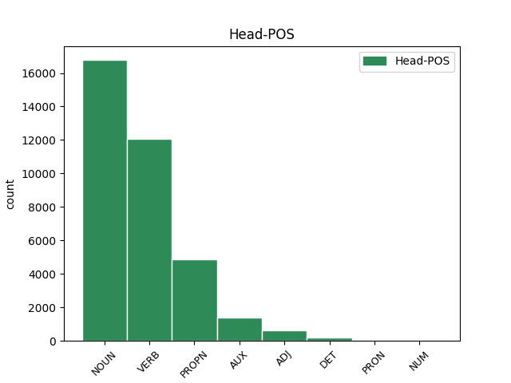

Distribution of features within this leaf


Agreement Rules sorted by frequency.
- When the dependent token is the determiner(det) of the head token, and the dependent token is DET.
1 Proto _ _ _ _ 0 _ _ _
2 je _ _ _ _ 0 _ _ _
3 třeba _ _ _ _ 0 _ _ _
4 připomenout _ _ _ _ 0 _ _ _
5 , _ _ _ _ 0 _ _ _
6 že _ _ _ _ 0 _ _ _
7 riziko _ _ _ _ 0 _ _ _
8 takové takový DET PDFS2---------- Case=Gen|Gender=Fem|Number=Sing|PronType=Dem 11 det _ _
9 globálně _ _ _ _ 0 _ _ _
10 ničivé _ _ _ _ 0 _ _ _
11 srážky srážka NOUN NNFS2-----A---- Case=Gen|Gender=Fem|Number=Sing|Polarity=Pos 0 _ _ _
12 v _ _ _ _ 0 _ _ _
13 nejbližším _ _ _ _ 0 _ _ _
14 století _ _ _ _ 0 _ _ _
15 je _ _ _ _ 0 _ _ _
16 opravdu _ _ _ _ 0 _ _ _
17 minimální _ _ _ _ 0 _ _ _
18 ; _ _ _ _ 0 _ _ _
1 Teller Teller PROPN NNMS1-----A---- Animacy=Anim|Case=Nom|Gender=Masc|NameType=Sur|Number=Sing|Polarity=Pos 3 subj _ _
2 se _ _ _ _ 0 _ _ _
3 bránil bránit VERB VpYS---XR-AA--- Gender=Masc|Number=Sing|Polarity=Pos|Tense=Past|VerbForm=Part|Voice=Act 0 _ _ _
4 charakteristickým _ _ _ _ 0 _ _ _
5 způsobem _ _ _ _ 0 _ _ _
6 : _ _ _ _ 0 _ _ _
7 " _ _ _ _ 0 _ _ _
8 Každý _ _ _ _ 0 _ _ _
9 kojenec _ _ _ _ 0 _ _ _
10 se _ _ _ _ 0 _ _ _
11 dá _ _ _ _ 0 _ _ _
12 jednou _ _ _ _ 0 _ _ _
13 zneužít _ _ _ _ 0 _ _ _
14 pro _ _ _ _ 0 _ _ _
15 agresívní _ _ _ _ 0 _ _ _
16 útok _ _ _ _ 0 _ _ _
17 - _ _ _ _ 0 _ _ _
18 znamená _ _ _ _ 0 _ _ _
19 to _ _ _ _ 0 _ _ _
20 snad _ _ _ _ 0 _ _ _
21 , _ _ _ _ 0 _ _ _
22 že _ _ _ _ 0 _ _ _
23 máme _ _ _ _ 0 _ _ _
24 přestat _ _ _ _ 0 _ _ _
25 s _ _ _ _ 0 _ _ _
26 výrobou _ _ _ _ 0 _ _ _
27 dětí _ _ _ _ 0 _ _ _
28 ? _ _ _ _ 0 _ _ _
29 " _ _ _ _ 0 _ _ _
1 O _ _ _ _ 0 _ _ _
2 takových _ _ _ _ 0 _ _ _
3 katastrofách _ _ _ _ 0 _ _ _
4 uvažovali _ _ _ _ 0 _ _ _
5 někteří _ _ _ _ 0 _ _ _
6 badatelé _ _ _ _ 0 _ _ _
7 jíž _ _ _ _ 0 _ _ _
8 v _ _ _ _ 0 _ _ _
9 minulých _ _ _ _ 0 _ _ _
10 stoletích _ _ _ _ 0 _ _ _
11 ( _ _ _ _ 0 _ _ _
12 G G PROPN NNMXX-----A---8 Abbr=Yes|Animacy=Anim|Gender=Masc|NameType=Giv|Polarity=Pos 0 _ _ _
13 . _ _ _ _ 0 _ _ _
14 Cuvier _ _ _ _ 0 _ _ _
15 , _ _ _ _ 0 _ _ _
16 G G PROPN NNMXX-----A---8 Abbr=Yes|Animacy=Anim|Gender=Masc|NameType=Giv|Polarity=Pos 12 conj _ LId=G-0|SpaceAfter=No
17 . _ _ _ _ 0 _ _ _
18 Buffon _ _ _ _ 0 _ _ _
19 ) _ _ _ _ 0 _ _ _
20 , _ _ _ _ 0 _ _ _
21 ale _ _ _ _ 0 _ _ _
22 pod _ _ _ _ 0 _ _ _
23 vlivem _ _ _ _ 0 _ _ _
24 pokroku _ _ _ _ 0 _ _ _
25 geologie _ _ _ _ 0 _ _ _
26 i _ _ _ _ 0 _ _ _
27 biologie _ _ _ _ 0 _ _ _
28 zvítězila _ _ _ _ 0 _ _ _
29 spíše _ _ _ _ 0 _ _ _
30 představa _ _ _ _ 0 _ _ _
31 o _ _ _ _ 0 _ _ _
32 plynulém _ _ _ _ 0 _ _ _
33 rozvoji _ _ _ _ 0 _ _ _
34 života _ _ _ _ 0 _ _ _
35 na _ _ _ _ 0 _ _ _
36 Zemi _ _ _ _ 0 _ _ _
37 . _ _ _ _ 0 _ _ _
1 K _ _ _ _ 0 _ _ _
2 tomu _ _ _ _ 0 _ _ _
3 by _ _ _ _ 0 _ _ _
4 bylo _ _ _ _ 0 _ _ _
5 nutné _ _ _ _ 0 _ _ _
6 připravit _ _ _ _ 0 _ _ _
7 do _ _ _ _ 0 _ _ _
8 bojové _ _ _ _ 0 _ _ _
9 pohotovosti _ _ _ _ 0 _ _ _
10 rakety _ _ _ _ 0 _ _ _
11 s _ _ _ _ 0 _ _ _
12 jadernými _ _ _ _ 0 _ _ _
13 hlavicemi _ _ _ _ 0 _ _ _
14 , _ _ _ _ 0 _ _ _
15 jež _ _ _ _ 0 _ _ _
16 by _ _ _ _ 0 _ _ _
17 obíhaly obíhat VERB VpTP---XR-AA--- Animacy=Inan|Aspect=Imp|Gender=Fem,Masc|Number=Plur|Polarity=Pos|Tense=Past|VerbForm=Part|Voice=Act 0 _ _ _
18 kolem _ _ _ _ 0 _ _ _
19 Země _ _ _ _ 0 _ _ _
20 a _ _ _ _ 0 _ _ _
21 čekaly čekat VERB VpTP---XR-AA--- Animacy=Inan|Aspect=Imp|Gender=Fem,Masc|Number=Plur|Polarity=Pos|Tense=Past|VerbForm=Part|Voice=Act 17 conj _ _
22 na _ _ _ _ 0 _ _ _
23 svou _ _ _ _ 0 _ _ _
24 příležitost _ _ _ _ 0 _ _ _
25 . _ _ _ _ 0 _ _ _
1 Teprve _ _ _ _ 0 _ _ _
2 r _ _ _ _ 0 _ _ _
3 . _ _ _ _ 0 _ _ _
4 1991 _ _ _ _ 0 _ _ _
5 geologové _ _ _ _ 0 _ _ _
6 po _ _ _ _ 0 _ _ _
7 dlouhém _ _ _ _ 0 _ _ _
8 úsilí _ _ _ _ 0 _ _ _
9 identifikovali _ _ _ _ 0 _ _ _
10 kráter _ _ _ _ 0 _ _ _
11 , _ _ _ _ 0 _ _ _
12 který který DET P4YS1---------- Case=Nom|Gender=Masc|Number=Sing|PronType=Int,Rel 13 subj _ _
13 vznikl vzniknout VERB VpYS---XR-AA--1 Aspect=Perf|Gender=Masc|Number=Sing|Polarity=Pos|Tense=Past|VerbForm=Part|Voice=Act 0 _ _ _
14 dopadem _ _ _ _ 0 _ _ _
15 planetky _ _ _ _ 0 _ _ _
16 s _ _ _ _ 0 _ _ _
17 průměrem _ _ _ _ 0 _ _ _
18 asi _ _ _ _ 0 _ _ _
19 10 _ _ _ _ 0 _ _ _
20 km _ _ _ _ 0 _ _ _
21 před _ _ _ _ 0 _ _ _
22 pouhými _ _ _ _ 0 _ _ _
23 65 _ _ _ _ 0 _ _ _
24 milióny _ _ _ _ 0 _ _ _
25 lety _ _ _ _ 0 _ _ _
26 . _ _ _ _ 0 _ _ _
1 Na _ _ _ _ 0 _ _ _
2 XXI _ _ _ _ 0 _ _ _
3 . _ _ _ _ 0 _ _ _
4 valném _ _ _ _ 0 _ _ _
5 shromáždění _ _ _ _ 0 _ _ _
6 Mezinárodní _ _ _ _ 0 _ _ _
7 astronomické _ _ _ _ 0 _ _ _
8 unie _ _ _ _ 0 _ _ _
9 v _ _ _ _ 0 _ _ _
10 srpnu _ _ _ _ 0 _ _ _
11 1991 _ _ _ _ 0 _ _ _
12 v _ _ _ _ 0 _ _ _
13 Buenos _ _ _ _ 0 _ _ _
14 Aires _ _ _ _ 0 _ _ _
15 byla _ _ _ _ 0 _ _ _
16 ustavena _ _ _ _ 0 _ _ _
17 mezioborová _ _ _ _ 0 _ _ _
18 pracovní _ _ _ _ 0 _ _ _
19 skupina skupina NOUN NNFS1-----A---- Case=Nom|Gender=Fem|Number=Sing|Polarity=Pos 0 _ _ _
20 pro _ _ _ _ 0 _ _ _
21 " _ _ _ _ 0 _ _ _
22 objekty _ _ _ _ 0 _ _ _
23 poblíž _ _ _ _ 0 _ _ _
24 Země _ _ _ _ 0 _ _ _
25 " _ _ _ _ 0 _ _ _
26 ( _ _ _ _ 0 _ _ _
27 WGNEO WGNEO PROPN NNFXX-----A---8 Abbr=Yes|Gender=Fem|NameType=Com|Polarity=Pos 19 appos _ SpaceAfter=No
28 ) _ _ _ _ 0 _ _ _
29 , _ _ _ _ 0 _ _ _
30 která _ _ _ _ 0 _ _ _
31 má _ _ _ _ 0 _ _ _
32 dva _ _ _ _ 0 _ _ _
33 hlavní _ _ _ _ 0 _ _ _
34 úkoly _ _ _ _ 0 _ _ _
35 , _ _ _ _ 0 _ _ _
36 totiž _ _ _ _ 0 _ _ _
37 především _ _ _ _ 0 _ _ _
38 vypracovat _ _ _ _ 0 _ _ _
39 metody _ _ _ _ 0 _ _ _
40 co _ _ _ _ 0 _ _ _
41 možná _ _ _ _ 0 _ _ _
42 úplné _ _ _ _ 0 _ _ _
43 inventarizace _ _ _ _ 0 _ _ _
44 rizikových _ _ _ _ 0 _ _ _
45 těles _ _ _ _ 0 _ _ _
46 a _ _ _ _ 0 _ _ _
47 za _ _ _ _ 0 _ _ _
48 druhé _ _ _ _ 0 _ _ _
49 navrhnout _ _ _ _ 0 _ _ _
50 vhodné _ _ _ _ 0 _ _ _
51 způsoby _ _ _ _ 0 _ _ _
52 ochrany _ _ _ _ 0 _ _ _
53 před _ _ _ _ 0 _ _ _
54 katastrofickými _ _ _ _ 0 _ _ _
55 srážkami _ _ _ _ 0 _ _ _
56 . _ _ _ _ 0 _ _ _
1 Sám sám DET PLYS1---------- Case=Nom|Gender=Masc|Number=Sing|PronType=Emp 2 comp:pred _ LGloss=(samotný)
2 Popper Popper PROPN NNMS1-----A---- Animacy=Anim|Case=Nom|Gender=Masc|NameType=Sur|Number=Sing|Polarity=Pos 0 _ _ _
3 flirtuje _ _ _ _ 0 _ _ _
4 s _ _ _ _ 0 _ _ _
5 metafyzikou _ _ _ _ 0 _ _ _
6 , _ _ _ _ 0 _ _ _
7 když _ _ _ _ 0 _ _ _
8 tvrdí _ _ _ _ 0 _ _ _
9 : _ _ _ _ 0 _ _ _
10 " _ _ _ _ 0 _ _ _
11 Vědecký _ _ _ _ 0 _ _ _
12 objev _ _ _ _ 0 _ _ _
13 je _ _ _ _ 0 _ _ _
14 nemožný _ _ _ _ 0 _ _ _
15 bez _ _ _ _ 0 _ _ _
16 víry _ _ _ _ 0 _ _ _
17 v _ _ _ _ 0 _ _ _
18 myšlenky _ _ _ _ 0 _ _ _
19 čistě _ _ _ _ 0 _ _ _
20 spekulativní _ _ _ _ 0 _ _ _
21 povahy _ _ _ _ 0 _ _ _
22 . _ _ _ _ 0 _ _ _
23 . _ _ _ _ 0 _ _ _
24 . _ _ _ _ 0 _ _ _
25 víry _ _ _ _ 0 _ _ _
26 , _ _ _ _ 0 _ _ _
27 která _ _ _ _ 0 _ _ _
28 je _ _ _ _ 0 _ _ _
29 zcela _ _ _ _ 0 _ _ _
30 nepodložená _ _ _ _ 0 _ _ _
31 z _ _ _ _ 0 _ _ _
32 hlediska _ _ _ _ 0 _ _ _
33 vědy _ _ _ _ 0 _ _ _
34 , _ _ _ _ 0 _ _ _
35 a _ _ _ _ 0 _ _ _
36 je _ _ _ _ 0 _ _ _
37 proto _ _ _ _ 0 _ _ _
38 , _ _ _ _ 0 _ _ _
39 do _ _ _ _ 0 _ _ _
40 jisté _ _ _ _ 0 _ _ _
41 míry _ _ _ _ 0 _ _ _
42 , _ _ _ _ 0 _ _ _
43 " _ _ _ _ 0 _ _ _
44 metafyzická _ _ _ _ 0 _ _ _
45 " _ _ _ _ 0 _ _ _
46 . _ _ _ _ 0 _ _ _
1 Později _ _ _ _ 0 _ _ _
2 jmenované _ _ _ _ 0 _ _ _
3 testy _ _ _ _ 0 _ _ _
4 byly _ _ _ _ 0 _ _ _
5 komplikovány _ _ _ _ 0 _ _ _
6 skutečností _ _ _ _ 0 _ _ _
7 , _ _ _ _ 0 _ _ _
8 že _ _ _ _ 0 _ _ _
9 díky _ _ _ _ 0 _ _ _
10 značnému _ _ _ _ 0 _ _ _
11 zvýšení _ _ _ _ 0 _ _ _
12 tělesných _ _ _ _ 0 _ _ _
13 rozměrů _ _ _ _ 0 _ _ _
14 populace _ _ _ _ 0 _ _ _
15 v _ _ _ _ 0 _ _ _
16 porovnání _ _ _ _ 0 _ _ _
17 s _ _ _ _ 0 _ _ _
18 našimi _ _ _ _ 0 _ _ _
19 předky _ _ _ _ 0 _ _ _
20 - _ _ _ _ 0 _ _ _
21 nebyl být AUX VpYS---XR-NA--- Gender=Masc|Number=Sing|Polarity=Neg|Tense=Past|VerbForm=Part|Voice=Act 0 _ _ _
22 nikdo nikdo PRON PWM-1---------- Animacy=Anim|Case=Nom|Gender=Masc|PronType=Neg 21 subj _ _
23 z _ _ _ _ 0 _ _ _
24 výzkumného _ _ _ _ 0 _ _ _
25 týmu _ _ _ _ 0 _ _ _
26 schopen _ _ _ _ 0 _ _ _
27 dobovou _ _ _ _ 0 _ _ _
28 zbroj _ _ _ _ 0 _ _ _
29 obléci _ _ _ _ 0 _ _ _
30 . _ _ _ _ 0 _ _ _
1 Kostra _ _ _ _ 0 _ _ _
2 byla být AUX VpQW---XR-AA--- Gender=Fem,Neut|Number=Plur,Sing|Polarity=Pos|Tense=Past|VerbForm=Part|Voice=Act 0 _ _ _
3 ozdobena _ _ _ _ 0 _ _ _
4 zlatými _ _ _ _ 0 _ _ _
5 dracouny _ _ _ _ 0 _ _ _
6 , _ _ _ _ 0 _ _ _
7 páskami _ _ _ _ 0 _ _ _
8 zdobenými _ _ _ _ 0 _ _ _
9 filigránem _ _ _ _ 0 _ _ _
10 , _ _ _ _ 0 _ _ _
11 perličkami _ _ _ _ 0 _ _ _
12 , _ _ _ _ 0 _ _ _
13 a _ _ _ _ 0 _ _ _
14 sklíčky _ _ _ _ 0 _ _ _
15 a _ _ _ _ 0 _ _ _
16 byla být AUX VpQW---XR-AA--- Gender=Fem,Neut|Number=Plur,Sing|Polarity=Pos|Tense=Past|VerbForm=Part|Voice=Act 2 conj _ _
17 oblečena _ _ _ _ 0 _ _ _
18 a _ _ _ _ 0 _ _ _
19 uložena _ _ _ _ 0 _ _ _
20 v _ _ _ _ 0 _ _ _
21 natažené _ _ _ _ 0 _ _ _
22 poloze _ _ _ _ 0 _ _ _
23 na _ _ _ _ 0 _ _ _
24 polštářích _ _ _ _ 0 _ _ _
25 ve _ _ _ _ 0 _ _ _
26 skleněné _ _ _ _ 0 _ _ _
27 rakvi _ _ _ _ 0 _ _ _
28 . _ _ _ _ 0 _ _ _
29 . _ _ _ _ 0 _ _ _
1 Dne _ _ _ _ 0 _ _ _
2 8 _ _ _ _ 0 _ _ _
3 . _ _ _ _ 0 _ _ _
4 5 _ _ _ _ 0 _ _ _
5 . _ _ _ _ 0 _ _ _
6 1973 _ _ _ _ 0 _ _ _
7 byla _ _ _ _ 0 _ _ _
8 vypreparovaná _ _ _ _ 0 _ _ _
9 a _ _ _ _ 0 _ _ _
10 zakonzervovaná _ _ _ _ 0 _ _ _
11 hmota _ _ _ _ 0 _ _ _
12 relikvie _ _ _ _ 0 _ _ _
13 předána _ _ _ _ 0 _ _ _
14 komisionálně _ _ _ _ 0 _ _ _
15 zástupci _ _ _ _ 0 _ _ _
16 Apoštolské _ _ _ _ 0 _ _ _
17 administrativy _ _ _ _ 0 _ _ _
18 a _ _ _ _ 0 _ _ _
19 vložena _ _ _ _ 0 _ _ _
20 zpět _ _ _ _ 0 _ _ _
21 do _ _ _ _ 0 _ _ _
22 zlatého _ _ _ _ 0 _ _ _
23 pouzdra _ _ _ _ 0 _ _ _
24 a _ _ _ _ 0 _ _ _
25 to ten DET PDNS1---------- Case=Nom|Gender=Neut|Number=Sing|PronType=Dem 26 subj@pass _ _
26 vloženo vložený ADJ VsNS---XX-AP--- Aspect=Perf|Gender=Neut|Number=Sing|Polarity=Pos|Variant=Short|VerbForm=Part|Voice=Pass 0 _ _ _
27 do _ _ _ _ 0 _ _ _
28 dvou _ _ _ _ 0 _ _ _
29 monstrancí _ _ _ _ 0 _ _ _
30 . _ _ _ _ 0 _ _ _
1 Toto _ _ _ _ 0 _ _ _
2 pozorování _ _ _ _ 0 _ _ _
3 umožní _ _ _ _ 0 _ _ _
4 zpřesnit _ _ _ _ 0 _ _ _
5 statistické _ _ _ _ 0 _ _ _
6 studie _ _ _ _ 0 _ _ _
7 a _ _ _ _ 0 _ _ _
8 sledovat _ _ _ _ 0 _ _ _
9 projevy _ _ _ _ 0 _ _ _
10 akutní _ _ _ _ 0 _ _ _
11 infekce _ _ _ _ 0 _ _ _
12 HIV _ _ _ _ 0 _ _ _
13 ( _ _ _ _ 0 _ _ _
14 La Le ADJ AAFSX----1A---- Degree=Pos|Foreign=Yes|Gender=Fem|Number=Sing|Polarity=Pos 0 _ _ _
15 Recherche Recherche PROPN NNFXX-----A---- Foreign=Yes|Gender=Fem|NameType=Pro|Polarity=Pos 14 flat@foreign _ _
16 246 _ _ _ _ 0 _ _ _
17 . _ _ _ _ 0 _ _ _
18 969 _ _ _ _ 0 _ _ _
19 , _ _ _ _ 0 _ _ _
20 1992 _ _ _ _ 0 _ _ _
21 ) _ _ _ _ 0 _ _ _
22 . _ _ _ _ 0 _ _ _
1 31 _ _ _ _ 0 _ _ _
2 . _ _ _ _ 0 _ _ _
3 5 _ _ _ _ 0 _ _ _
4 . _ _ _ _ 0 _ _ _
5 1721 _ _ _ _ 0 _ _ _
6 byl být AUX VpYS---XR-AA--- Gender=Masc|Number=Sing|Polarity=Pos|Tense=Past|VerbForm=Part|Voice=Act 0 _ _ _
7 Jan Jan PROPN NNMS1-----A---- Animacy=Anim|Case=Nom|Gender=Masc|NameType=Giv|Number=Sing|Polarity=Pos 6 subj@pass _ _
8 z _ _ _ _ 0 _ _ _
9 Pomuku _ _ _ _ 0 _ _ _
10 prohlášen _ _ _ _ 0 _ _ _
11 papežem _ _ _ _ 0 _ _ _
12 Innocencem _ _ _ _ 0 _ _ _
13 XIII _ _ _ _ 0 _ _ _
14 . _ _ _ _ 0 _ _ _
15 za _ _ _ _ 0 _ _ _
16 blahoslaveného _ _ _ _ 0 _ _ _
17 . _ _ _ _ 0 _ _ _
1 Ještě _ _ _ _ 0 _ _ _
2 před _ _ _ _ 0 _ _ _
3 dvěma _ _ _ _ 0 _ _ _
4 lety _ _ _ _ 0 _ _ _
5 rozpočet _ _ _ _ 0 _ _ _
6 stoupal stoupat VERB VpYS---XR-AA--- Aspect=Imp|Gender=Masc|Number=Sing|Polarity=Pos|Tense=Past|VerbForm=Part|Voice=Act 0 _ _ _
7 ( _ _ _ _ 0 _ _ _
8 za _ _ _ _ 0 _ _ _
9 posledních _ _ _ _ 0 _ _ _
10 dvacet _ _ _ _ 0 _ _ _
11 let _ _ _ _ 0 _ _ _
12 se _ _ _ _ 0 _ _ _
13 zdvojnásobil zdvojnásobit VERB VpYS---XR-AA--- Aspect=Perf|Gender=Masc|Number=Sing|Polarity=Pos|Tense=Past|VerbForm=Part|Voice=Act 6 parataxis _ SpaceAfter=No
14 ) _ _ _ _ 0 _ _ _
15 . _ _ _ _ 0 _ _ _
1 M _ _ _ _ 0 _ _ _
2 . _ _ _ _ 0 _ _ _
3 Janoušek _ _ _ _ 0 _ _ _
4 , _ _ _ _ 0 _ _ _
5 J J PROPN NNMXX-----A---8 Abbr=Yes|Animacy=Anim|Gender=Masc|NameType=Giv|Polarity=Pos 0 _ _ _
6 . _ _ _ _ 0 _ _ _
7 Beran _ _ _ _ 0 _ _ _
8 , _ _ _ _ 0 _ _ _
9 M M PROPN NNMXX-----A---8 Abbr=Yes|Animacy=Anim|Gender=Masc|NameType=Giv|Polarity=Pos 5 orphan _ LId=M-0|SpaceAfter=No
10 . _ _ _ _ 0 _ _ _
11 Vacek _ _ _ _ 0 _ _ _
12 , _ _ _ _ 0 _ _ _
1 Ukazuje _ _ _ _ 0 _ _ _
2 se _ _ _ _ 0 _ _ _
3 , _ _ _ _ 0 _ _ _
4 že _ _ _ _ 0 _ _ _
5 nulové _ _ _ _ 0 _ _ _
6 kmity _ _ _ _ 0 _ _ _
7 vakua _ _ _ _ 0 _ _ _
8 se _ _ _ _ 0 _ _ _
9 výrazně _ _ _ _ 0 _ _ _
10 projevují _ _ _ _ 0 _ _ _
11 v _ _ _ _ 0 _ _ _
12 celé _ _ _ _ 0 _ _ _
13 řadě _ _ _ _ 0 _ _ _
14 pozoruhodných _ _ _ _ 0 _ _ _
15 fyzikálních _ _ _ _ 0 _ _ _
16 efektů _ _ _ _ 0 _ _ _
17 , _ _ _ _ 0 _ _ _
18 z _ _ _ _ 0 _ _ _
19 nichž _ _ _ _ 0 _ _ _
20 jeden jeden NUM ClYS1---------- Case=Nom|Gender=Masc|Number=Sing|NumForm=Word|NumType=Card|NumValue=1,2,3 21 subj _ LNumValue=1
21 byl být AUX VpYS---XR-AA--- Gender=Masc|Number=Sing|Polarity=Pos|Tense=Past|VerbForm=Part|Voice=Act 0 _ _ _
22 předpovězen _ _ _ _ 0 _ _ _
23 r _ _ _ _ 0 _ _ _
24 . _ _ _ _ 0 _ _ _
25 1948 _ _ _ _ 0 _ _ _
26 holandským _ _ _ _ 0 _ _ _
27 fyzikem _ _ _ _ 0 _ _ _
28 Hendrixem _ _ _ _ 0 _ _ _
29 Casimirem _ _ _ _ 0 _ _ _
30 ( _ _ _ _ 0 _ _ _
31 po _ _ _ _ 0 _ _ _
32 němž _ _ _ _ 0 _ _ _
33 je _ _ _ _ 0 _ _ _
34 také _ _ _ _ 0 _ _ _
35 pojmenován _ _ _ _ 0 _ _ _
36 ) _ _ _ _ 0 _ _ _
37 . _ _ _ _ 0 _ _ _
1 V _ _ _ _ 0 _ _ _
2 těchto _ _ _ _ 0 _ _ _
3 případech _ _ _ _ 0 _ _ _
4 se _ _ _ _ 0 _ _ _
5 doporučuje _ _ _ _ 0 _ _ _
6 užívat _ _ _ _ 0 _ _ _
7 raději _ _ _ _ 0 _ _ _
8 jednoznačná _ _ _ _ 0 _ _ _
9 z _ _ _ _ 0 _ _ _
10 . _ _ _ _ 0 _ _ _
11 nezvratná _ _ _ _ 0 _ _ _
12 ( _ _ _ _ 0 _ _ _
13 mou můj DET PSFS4-S1------1 Case=Acc|Gender=Fem|Number=Sing|Number[psor]=Sing|Person=1|Poss=Yes|PronType=Prs 0 _ _ _
14 - _ _ _ _ 0 _ _ _
15 tvou tvůj DET PSFS4-S2------1 Case=Acc|Gender=Fem|Number=Sing|Number[psor]=Sing|Person=2|Poss=Yes|PronType=Prs 13 conj _ LGloss=(přivlast.)
16 ) _ _ _ _ 0 _ _ _
17 . _ _ _ _ 0 _ _ _
1 Tak _ _ _ _ 0 _ _ _
2 vzniklo _ _ _ _ 0 _ _ _
3 Pobřeží _ _ _ _ 0 _ _ _
4 hned _ _ _ _ 0 _ _ _
5 v _ _ _ _ 0 _ _ _
6 několika _ _ _ _ 0 _ _ _
7 variantách _ _ _ _ 0 _ _ _
8 Mořské _ _ _ _ 0 _ _ _
9 dno _ _ _ _ 0 _ _ _
10 , _ _ _ _ 0 _ _ _
11 Odliv _ _ _ _ 0 _ _ _
12 a _ _ _ _ 0 _ _ _
13 především _ _ _ _ 0 _ _ _
14 jemná _ _ _ _ 0 _ _ _
15 i _ _ _ _ 0 _ _ _
16 velkolepá _ _ _ _ 0 _ _ _
17 Voda _ _ _ _ 0 _ _ _
18 a _ _ _ _ 0 _ _ _
19 země _ _ _ _ 0 _ _ _
20 ( _ _ _ _ 0 _ _ _
21 kde _ _ _ _ 0 _ _ _
22 se _ _ _ _ 0 _ _ _
23 John _ _ _ _ 0 _ _ _
24 snad _ _ _ _ 0 _ _ _
25 nejvíce _ _ _ _ 0 _ _ _
26 přiblížil přiblížit VERB VpYS---XR-AA--- Aspect=Perf|Gender=Masc|Number=Sing|Polarity=Pos|Tense=Past|VerbForm=Part|Voice=Act 0 _ _ _
27 Josefu Josef PROPN NNMS3-----A---1 Animacy=Anim|Case=Dat|Gender=Masc|NameType=Giv|Number=Sing|Polarity=Pos 26 udep _ _
28 Šímovi _ _ _ _ 0 _ _ _
29 , _ _ _ _ 0 _ _ _
30 malíři _ _ _ _ 0 _ _ _
31 mu _ _ _ _ 0 _ _ _
32 obzvlášť _ _ _ _ 0 _ _ _
33 drahému _ _ _ _ 0 _ _ _
34 ) _ _ _ _ 0 _ _ _
35 a _ _ _ _ 0 _ _ _
36 stejně _ _ _ _ 0 _ _ _
37 mistrovské _ _ _ _ 0 _ _ _
38 ilustrace _ _ _ _ 0 _ _ _
39 Persových _ _ _ _ 0 _ _ _
40 Majáků _ _ _ _ 0 _ _ _
41 . _ _ _ _ 0 _ _ _
1 Narodil narodit VERB VpYS---XR-AA--- Aspect=Perf|Gender=Masc|Number=Sing|Polarity=Pos|Tense=Past|VerbForm=Part|Voice=Act 0 _ _ _
2 se _ _ _ _ 0 _ _ _
3 v _ _ _ _ 0 _ _ _
4 americkém _ _ _ _ 0 _ _ _
5 státě _ _ _ _ 0 _ _ _
6 Iowa _ _ _ _ 0 _ _ _
7 , _ _ _ _ 0 _ _ _
8 studoval studovat VERB VpYS---XR-AA--- Aspect=Imp|Gender=Masc|Number=Sing|Polarity=Pos|Tense=Past|VerbForm=Part|Voice=Act 1 appos _ _
9 v _ _ _ _ 0 _ _ _
10 USA _ _ _ _ 0 _ _ _
11 , _ _ _ _ 0 _ _ _
12 kde _ _ _ _ 0 _ _ _
13 se _ _ _ _ 0 _ _ _
14 r _ _ _ _ 0 _ _ _
15 . _ _ _ _ 0 _ _ _
16 1940 _ _ _ _ 0 _ _ _
17 stal _ _ _ _ 0 _ _ _
18 lékařem _ _ _ _ 0 _ _ _
19 . _ _ _ _ 0 _ _ _
1 Faruk Faruk PROPN NNMS1-----A---- Animacy=Anim|Case=Nom|Gender=Masc|NameType=Giv|Number=Sing|Polarity=Pos 0 _ _ _
2 Kulenovič _ _ _ _ 0 _ _ _
3 , _ _ _ _ 0 _ _ _
4 jeden jeden NUM ClYS1---------- Case=Nom|Gender=Masc|Number=Sing|NumForm=Word|NumType=Card|NumValue=1,2,3 1 appos _ LNumValue=1
5 z _ _ _ _ 0 _ _ _
6 lékařů _ _ _ _ 0 _ _ _
7 nemocnice _ _ _ _ 0 _ _ _
8 Koševo _ _ _ _ 0 _ _ _
9 , _ _ _ _ 0 _ _ _
10 uvedl _ _ _ _ 0 _ _ _
11 již _ _ _ _ 0 _ _ _
12 v _ _ _ _ 0 _ _ _
13 pondělí _ _ _ _ 0 _ _ _
14 , _ _ _ _ 0 _ _ _
15 že _ _ _ _ 0 _ _ _
16 zásob _ _ _ _ 0 _ _ _
17 nafty _ _ _ _ 0 _ _ _
18 pro _ _ _ _ 0 _ _ _
19 nejnutnější _ _ _ _ 0 _ _ _
20 operace _ _ _ _ 0 _ _ _
21 zbývá _ _ _ _ 0 _ _ _
22 tak _ _ _ _ 0 _ _ _
23 na _ _ _ _ 0 _ _ _
24 tři _ _ _ _ 0 _ _ _
25 dny _ _ _ _ 0 _ _ _
26 . _ _ _ _ 0 _ _ _
1 V _ _ _ _ 0 _ _ _
2 porovnání _ _ _ _ 0 _ _ _
3 se _ _ _ _ 0 _ _ _
4 stavem _ _ _ _ 0 _ _ _
5 v _ _ _ _ 0 _ _ _
6 l _ _ _ _ 0 _ _ _
7 . _ _ _ _ 0 _ _ _
8 1970 _ _ _ _ 0 _ _ _
9 a _ _ _ _ 0 _ _ _
10 1980 _ _ _ _ 0 _ _ _
11 si _ _ _ _ 0 _ _ _
12 žádný _ _ _ _ 0 _ _ _
13 okres _ _ _ _ 0 _ _ _
14 ČR _ _ _ _ 0 _ _ _
15 ani _ _ _ _ 0 _ _ _
16 SR _ _ _ _ 0 _ _ _
17 v _ _ _ _ 0 _ _ _
18 r _ _ _ _ 0 _ _ _
19 . _ _ _ _ 0 _ _ _
20 1989 _ _ _ _ 0 _ _ _
21 " _ _ _ _ 0 _ _ _
22 nevylepšil _ _ _ _ 0 _ _ _
23 " _ _ _ _ 0 _ _ _
24 pozici _ _ _ _ 0 _ _ _
25 , _ _ _ _ 0 _ _ _
26 naopak _ _ _ _ 0 _ _ _
27 jeden _ _ _ _ 0 _ _ _
28 český český ADJ AAIS1----1A---- Animacy=Inan|Case=Nom|Degree=Pos|Gender=Masc|Number=Sing|Polarity=Pos 0 _ _ _
29 a _ _ _ _ 0 _ _ _
30 jeden jeden NUM ClYS1---------- Case=Nom|Gender=Masc|Number=Sing|NumForm=Word|NumType=Card|NumValue=1,2,3 28 conj _ LNumValue=1
31 slovenský _ _ _ _ 0 _ _ _
32 si _ _ _ _ 0 _ _ _
33 ji _ _ _ _ 0 _ _ _
34 výrazně _ _ _ _ 0 _ _ _
35 zhoršily _ _ _ _ 0 _ _ _
36 : _ _ _ _ 0 _ _ _
37 Jindřichův _ _ _ _ 0 _ _ _
38 Hradec _ _ _ _ 0 _ _ _
39 a _ _ _ _ 0 _ _ _
40 Spišská _ _ _ _ 0 _ _ _
41 Nová _ _ _ _ 0 _ _ _
42 Ves _ _ _ _ 0 _ _ _
43 . _ _ _ _ 0 _ _ _
1 Lidé _ _ _ _ 0 _ _ _
2 chápou _ _ _ _ 0 _ _ _
3 jako _ _ _ _ 0 _ _ _
4 reálné _ _ _ _ 0 _ _ _
5 to ten DET PDNS4---------- Case=Acc|Gender=Neut|Number=Sing|PronType=Dem 0 _ _ _
6 , _ _ _ _ 0 _ _ _
7 co _ _ _ _ 0 _ _ _
8 sami _ _ _ _ 0 _ _ _
9 vytvoří _ _ _ _ 0 _ _ _
10 a _ _ _ _ 0 _ _ _
11 co _ _ _ _ 0 _ _ _
12 zpětně _ _ _ _ 0 _ _ _
13 působí _ _ _ _ 0 _ _ _
14 na _ _ _ _ 0 _ _ _
15 ně _ _ _ _ 0 _ _ _
16 , _ _ _ _ 0 _ _ _
17 tedy _ _ _ _ 0 _ _ _
18 všechno _ _ _ _ 0 _ _ _
19 to ten DET PDNS4---------- Case=Acc|Gender=Neut|Number=Sing|PronType=Dem 5 appos _ SpaceAfter=No
20 , _ _ _ _ 0 _ _ _
21 s _ _ _ _ 0 _ _ _
22 čím _ _ _ _ 0 _ _ _
23 přicházejí _ _ _ _ 0 _ _ _
24 denně _ _ _ _ 0 _ _ _
25 do _ _ _ _ 0 _ _ _
26 styku _ _ _ _ 0 _ _ _
27 . _ _ _ _ 0 _ _ _
1 Došlo _ _ _ _ 0 _ _ _
2 k _ _ _ _ 0 _ _ _
3 integraci _ _ _ _ 0 _ _ _
4 obou _ _ _ _ 0 _ _ _
5 výzkumných _ _ _ _ 0 _ _ _
6 oblastí _ _ _ _ 0 _ _ _
7 , _ _ _ _ 0 _ _ _
8 které který DET P4FP1---------- Case=Nom|Gender=Fem|Number=Plur|PronType=Int,Rel 0 _ _ _
9 jedna jeden NUM ClFS1---------- Case=Nom|Gender=Fem|Number=Sing|NumForm=Word|NumType=Card|NumValue=1,2,3 8 comp:pred _ LNumValue=1
10 bez _ _ _ _ 0 _ _ _
11 druhé _ _ _ _ 0 _ _ _
12 nejsou _ _ _ _ 0 _ _ _
13 dnes _ _ _ _ 0 _ _ _
14 myslitelné _ _ _ _ 0 _ _ _
15 . _ _ _ _ 0 _ _ _
1 Jak _ _ _ _ 0 _ _ _
2 už _ _ _ _ 0 _ _ _
3 je _ _ _ _ 0 _ _ _
4 to _ _ _ _ 0 _ _ _
5 pro _ _ _ _ 0 _ _ _
6 dnešek _ _ _ _ 0 _ _ _
7 typické _ _ _ _ 0 _ _ _
8 , _ _ _ _ 0 _ _ _
9 nenavštívilo _ _ _ _ 0 _ _ _
10 ji _ _ _ _ 0 _ _ _
11 mnoho _ _ _ _ 0 _ _ _
12 lidí _ _ _ _ 0 _ _ _
13 , _ _ _ _ 0 _ _ _
14 ale _ _ _ _ 0 _ _ _
15 kdo _ _ _ _ 0 _ _ _
16 přišel přijít VERB VpYS---XR-AA--- Gender=Masc|Number=Sing|Polarity=Pos|Tense=Past|VerbForm=Part|Voice=Act 18 subj _ SpaceAfter=No
17 , _ _ _ _ 0 _ _ _
18 zůstal zůstat VERB VpYS---XR-AA--- Gender=Masc|Number=Sing|Polarity=Pos|Tense=Past|VerbForm=Part|Voice=Act 0 _ _ _
19 tam _ _ _ _ 0 _ _ _
20 dlouho _ _ _ _ 0 _ _ _
21 a _ _ _ _ 0 _ _ _
22 nejednou _ _ _ _ 0 _ _ _
23 se _ _ _ _ 0 _ _ _
24 vrátil _ _ _ _ 0 _ _ _
25 - _ _ _ _ 0 _ _ _
26 i _ _ _ _ 0 _ _ _
27 proto _ _ _ _ 0 _ _ _
28 se _ _ _ _ 0 _ _ _
29 vrátil _ _ _ _ 0 _ _ _
30 , _ _ _ _ 0 _ _ _
31 že _ _ _ _ 0 _ _ _
32 Jiří _ _ _ _ 0 _ _ _
33 John _ _ _ _ 0 _ _ _
34 , _ _ _ _ 0 _ _ _
35 vzácný _ _ _ _ 0 _ _ _
36 umělec _ _ _ _ 0 _ _ _
37 a _ _ _ _ 0 _ _ _
38 člověk _ _ _ _ 0 _ _ _
39 , _ _ _ _ 0 _ _ _
40 který _ _ _ _ 0 _ _ _
41 chápal _ _ _ _ 0 _ _ _
42 přírodu _ _ _ _ 0 _ _ _
43 jako _ _ _ _ 0 _ _ _
44 málokdo _ _ _ _ 0 _ _ _
45 jiný _ _ _ _ 0 _ _ _
46 , _ _ _ _ 0 _ _ _
47 zobrazil _ _ _ _ 0 _ _ _
48 ji _ _ _ _ 0 _ _ _
49 moderně _ _ _ _ 0 _ _ _
50 . _ _ _ _ 0 _ _ _
51 ale _ _ _ _ 0 _ _ _
52 bez _ _ _ _ 0 _ _ _
53 křečovitosti _ _ _ _ 0 _ _ _
54 dnes _ _ _ _ 0 _ _ _
55 tak _ _ _ _ 0 _ _ _
56 časté _ _ _ _ 0 _ _ _
57 , _ _ _ _ 0 _ _ _
58 a _ _ _ _ 0 _ _ _
59 nestyděl _ _ _ _ 0 _ _ _
60 se _ _ _ _ 0 _ _ _
61 zdůraznit _ _ _ _ 0 _ _ _
62 , _ _ _ _ 0 _ _ _
63 co _ _ _ _ 0 _ _ _
64 je _ _ _ _ 0 _ _ _
65 v _ _ _ _ 0 _ _ _
66 ní _ _ _ _ 0 _ _ _
67 krásné _ _ _ _ 0 _ _ _
68 . _ _ _ _ 0 _ _ _
1 Už _ _ _ _ 0 _ _ _
2 týden _ _ _ _ 0 _ _ _
3 se _ _ _ _ 0 _ _ _
4 fotbalisté _ _ _ _ 0 _ _ _
5 Unionu _ _ _ _ 0 _ _ _
6 Cheb _ _ _ _ 0 _ _ _
7 připravují _ _ _ _ 0 _ _ _
8 na _ _ _ _ 0 _ _ _
9 nejvyšší _ _ _ _ 0 _ _ _
10 soutěž _ _ _ _ 0 _ _ _
11 , _ _ _ _ 0 _ _ _
12 s _ _ _ _ 0 _ _ _
13 mužstvem _ _ _ _ 0 _ _ _
14 a _ _ _ _ 0 _ _ _
15 s _ _ _ _ 0 _ _ _
16 prací _ _ _ _ 0 _ _ _
17 v _ _ _ _ 0 _ _ _
18 " _ _ _ _ 0 _ _ _
19 českých _ _ _ _ 0 _ _ _
20 " _ _ _ _ 0 _ _ _
21 podmínkách _ _ _ _ 0 _ _ _
22 se _ _ _ _ 0 _ _ _
23 seznamuje _ _ _ _ 0 _ _ _
24 trenér _ _ _ _ 0 _ _ _
25 Dušan _ _ _ _ 0 _ _ _
26 Radolský _ _ _ _ 0 _ _ _
27 , _ _ _ _ 0 _ _ _
28 Trnavák _ _ _ _ 0 _ _ _
29 , _ _ _ _ 0 _ _ _
30 jenž jenž PRON PJYS1---------- Case=Nom|Gender=Masc|Number=Sing|PrepCase=Npr|PronType=Rel 31 subj@pass _ LGloss=(který_[ve_vedl.větě])
31 byl být AUX VpYS---XR-AA--- Gender=Masc|Number=Sing|Polarity=Pos|Tense=Past|VerbForm=Part|Voice=Act 0 _ _ _
32 Západočechy _ _ _ _ 0 _ _ _
33 " _ _ _ _ 0 _ _ _
34 přetáhnut _ _ _ _ 0 _ _ _
35 " _ _ _ _ 0 _ _ _
36 z _ _ _ _ 0 _ _ _
37 D _ _ _ _ 0 _ _ _
38 . _ _ _ _ 0 _ _ _
39 Stredy _ _ _ _ 0 _ _ _
40 . _ _ _ _ 0 _ _ _
1 Někteří _ _ _ _ 0 _ _ _
2 pánové _ _ _ _ 0 _ _ _
3 by _ _ _ _ 0 _ _ _
4 byli být AUX VpMP---XR-AA--- Animacy=Anim|Gender=Masc|Number=Plur|Polarity=Pos|Tense=Past|VerbForm=Part|Voice=Act 0 _ _ _
5 tuhle _ _ _ _ 0 _ _ _
6 větu _ _ _ _ 0 _ _ _
7 hrozně _ _ _ _ 0 _ _ _
8 rádi _ _ _ _ 0 _ _ _
9 obrátili obrátit VERB VpMP---XR-AA--- Animacy=Anim|Aspect=Perf|Gender=Masc|Number=Plur|Polarity=Pos|Tense=Past|VerbForm=Part|Voice=Act 4 comp:aux _ _
10 tvrdíce _ _ _ _ 0 _ _ _
11 , _ _ _ _ 0 _ _ _
12 že _ _ _ _ 0 _ _ _
13 jejich _ _ _ _ 0 _ _ _
14 větě _ _ _ _ 0 _ _ _
15 nerozumíme _ _ _ _ 0 _ _ _
16 , _ _ _ _ 0 _ _ _
17 když _ _ _ _ 0 _ _ _
18 o _ _ _ _ 0 _ _ _
19 ní _ _ _ _ 0 _ _ _
20 pochybujeme _ _ _ _ 0 _ _ _
21 . _ _ _ _ 0 _ _ _
1 Jeden jeden NUM ClYS1---------- Case=Nom|Gender=Masc|Number=Sing|NumForm=Word|NumType=Card|NumValue=1,2,3 0 _ _ _
2 z _ _ _ _ 0 _ _ _
3 nich _ _ _ _ 0 _ _ _
4 maje mít VERB VeYS------A---- Aspect=Imp|Gender=Masc|Number=Sing|Polarity=Pos|Tense=Pres|VerbForm=Conv|Voice=Act 1 comp:pred _ _
5 v _ _ _ _ 0 _ _ _
6 délce _ _ _ _ 0 _ _ _
7 asi _ _ _ _ 0 _ _ _
8 1 _ _ _ _ 0 _ _ _
9 dm _ _ _ _ 0 _ _ _
10 zavírá _ _ _ _ 0 _ _ _
11 v _ _ _ _ 0 _ _ _
12 sobě _ _ _ _ 0 _ _ _
13 ještěrku _ _ _ _ 0 _ _ _
14 , _ _ _ _ 0 _ _ _
15 převzácný _ _ _ _ 0 _ _ _
16 to _ _ _ _ 0 _ _ _
17 úkaz _ _ _ _ 0 _ _ _
18 z _ _ _ _ 0 _ _ _
19 jantarové _ _ _ _ 0 _ _ _
20 periody _ _ _ _ 0 _ _ _
21 . _ _ _ _ 0 _ _ _
1 Majitel _ _ _ _ 0 _ _ _
2 a _ _ _ _ 0 _ _ _
3 předseda _ _ _ _ 0 _ _ _
4 klubu _ _ _ _ 0 _ _ _
5 Bernard _ _ _ _ 0 _ _ _
6 Tapie _ _ _ _ 0 _ _ _
7 , _ _ _ _ 0 _ _ _
8 jehož _ _ _ _ 0 _ _ _
9 soudce _ _ _ _ 0 _ _ _
10 Beffi _ _ _ _ 0 _ _ _
11 ve _ _ _ _ 0 _ _ _
12 středu _ _ _ _ 0 _ _ _
13 vyslýchal _ _ _ _ 0 _ _ _
14 , _ _ _ _ 0 _ _ _
15 prohlásil _ _ _ _ 0 _ _ _
16 , _ _ _ _ 0 _ _ _
17 že _ _ _ _ 0 _ _ _
18 jde _ _ _ _ 0 _ _ _
19 o _ _ _ _ 0 _ _ _
20 pokus _ _ _ _ 0 _ _ _
21 zničit _ _ _ _ 0 _ _ _
22 klub klub NOUN NNIS4-----A---- Animacy=Inan|Case=Acc|Gender=Masc|Number=Sing|Polarity=Pos 0 _ _ _
23 a _ _ _ _ 0 _ _ _
24 jeho on PRON PPYS4--3------- Case=Acc|Gender=Masc|Number=Sing|Person=3|PronType=Prs 22 conj _ LGloss=(vidím_ho)|LId=on-1
25 osobně _ _ _ _ 0 _ _ _
26 . _ _ _ _ 0 _ _ _
1 K _ _ _ _ 0 _ _ _
2 závažné _ _ _ _ 0 _ _ _
3 dopravní _ _ _ _ 0 _ _ _
4 nehodě _ _ _ _ 0 _ _ _
5 , _ _ _ _ 0 _ _ _
6 při _ _ _ _ 0 _ _ _
7 které _ _ _ _ 0 _ _ _
8 tři _ _ _ _ 0 _ _ _
9 lidé _ _ _ _ 0 _ _ _
10 zahynuli _ _ _ _ 0 _ _ _
11 a _ _ _ _ 0 _ _ _
12 jeden jeden NUM ClYS1---------- Case=Nom|Gender=Masc|Number=Sing|NumForm=Word|NumType=Card|NumValue=1,2,3 13 subj@pass _ LNumValue=1
13 byl být AUX VpYS---XR-AA--- Gender=Masc|Number=Sing|Polarity=Pos|Tense=Past|VerbForm=Part|Voice=Act 0 _ _ _
14 těžce _ _ _ _ 0 _ _ _
15 zraněn _ _ _ _ 0 _ _ _
16 , _ _ _ _ 0 _ _ _
17 došlo _ _ _ _ 0 _ _ _
18 ve _ _ _ _ 0 _ _ _
19 středu _ _ _ _ 0 _ _ _
20 na _ _ _ _ 0 _ _ _
21 dálnici _ _ _ _ 0 _ _ _
22 poblíž _ _ _ _ 0 _ _ _
23 obce _ _ _ _ 0 _ _ _
24 Koberovice _ _ _ _ 0 _ _ _
25 na _ _ _ _ 0 _ _ _
26 Pelhřimovsku _ _ _ _ 0 _ _ _
27 . _ _ _ _ 0 _ _ _
1 Tento _ _ _ _ 0 _ _ _
2 rys _ _ _ _ 0 _ _ _
3 procitá _ _ _ _ 0 _ _ _
4 vždy _ _ _ _ 0 _ _ _
5 , _ _ _ _ 0 _ _ _
6 když _ _ _ _ 0 _ _ _
7 se _ _ _ _ 0 _ _ _
8 církev _ _ _ _ 0 _ _ _
9 začíná _ _ _ _ 0 _ _ _
10 víc _ _ _ _ 0 _ _ _
11 starat _ _ _ _ 0 _ _ _
12 o _ _ _ _ 0 _ _ _
13 svůj _ _ _ _ 0 _ _ _
14 majetek _ _ _ _ 0 _ _ _
15 než _ _ _ _ 0 _ _ _
16 o _ _ _ _ 0 _ _ _
17 své svůj DET P8YP4---------1 Case=Acc|Gender=Masc|Number=Plur|Poss=Yes|PronType=Prs|Reflex=Yes 18 udep _ LGloss=(přivlast.)|LId=svůj-1
18 plačící plačící ADJ AAMP4----1A---- Animacy=Anim|Case=Acc|Degree=Pos|Gender=Masc|Number=Plur|Polarity=Pos 0 _ _ _
19 . _ _ _ _ 0 _ _ _
1 Rodem _ _ _ _ 0 _ _ _
2 byl být AUX VpYS---XR-AA--- Gender=Masc|Number=Sing|Polarity=Pos|Tense=Past|VerbForm=Part|Voice=Act 0 _ _ _
3 Němec Němec PROPN NNMS1-----A---- Animacy=Anim|Case=Nom|Gender=Masc|NameType=Sur|Number=Sing|Polarity=Pos 2 comp:pred _ LId=Němec-1|SpaceAfter=No
4 , _ _ _ _ 0 _ _ _
5 ale _ _ _ _ 0 _ _ _
6 podle _ _ _ _ 0 _ _ _
7 narození _ _ _ _ 0 _ _ _
8 Bohemus _ _ _ _ 0 _ _ _
9 , _ _ _ _ 0 _ _ _
10 tedy _ _ _ _ 0 _ _ _
11 narozený _ _ _ _ 0 _ _ _
12 v _ _ _ _ 0 _ _ _
13 Čechách _ _ _ _ 0 _ _ _
14 . _ _ _ _ 0 _ _ _
1 Ne _ _ _ _ 0 _ _ _
2 že _ _ _ _ 0 _ _ _
3 by _ _ _ _ 0 _ _ _
4 geologové _ _ _ _ 0 _ _ _
5 do _ _ _ _ 0 _ _ _
6 jednoho _ _ _ _ 0 _ _ _
7 tvrdili tvrdit VERB VpMP---XR-AA--- Animacy=Anim|Aspect=Imp|Gender=Masc|Number=Plur|Polarity=Pos|Tense=Past|VerbForm=Part|Voice=Act 0 _ _ _
8 že _ _ _ _ 0 _ _ _
9 na _ _ _ _ 0 _ _ _
10 hranicích _ _ _ _ 0 _ _ _
11 geologických _ _ _ _ 0 _ _ _
12 období _ _ _ _ 0 _ _ _
13 šlo _ _ _ _ 0 _ _ _
14 o _ _ _ _ 0 _ _ _
15 srážky _ _ _ _ 0 _ _ _
16 Země _ _ _ _ 0 _ _ _
17 s _ _ _ _ 0 _ _ _
18 kosmickými _ _ _ _ 0 _ _ _
19 tělesy _ _ _ _ 0 _ _ _
20 , _ _ _ _ 0 _ _ _
21 ale _ _ _ _ 0 _ _ _
22 při _ _ _ _ 0 _ _ _
23 vší _ _ _ _ 0 _ _ _
24 darwinistické _ _ _ _ 0 _ _ _
25 evoluční _ _ _ _ 0 _ _ _
26 umíněnosti _ _ _ _ 0 _ _ _
27 a _ _ _ _ 0 _ _ _
28 používání _ _ _ _ 0 _ _ _
29 aktualistického _ _ _ _ 0 _ _ _
30 principu _ _ _ _ 0 _ _ _
31 definovali definovat VERB VpMP---XR-AA--- Animacy=Anim|Gender=Masc|Number=Plur|Polarity=Pos|Tense=Past|VerbForm=Part|Voice=Act 7 orphan _ _
32 hranice _ _ _ _ 0 _ _ _
33 mezi _ _ _ _ 0 _ _ _
34 geologickými _ _ _ _ 0 _ _ _
35 útvary _ _ _ _ 0 _ _ _
36 na _ _ _ _ 0 _ _ _
37 pozorováních _ _ _ _ 0 _ _ _
38 , _ _ _ _ 0 _ _ _
39 že _ _ _ _ 0 _ _ _
40 vyhynula _ _ _ _ 0 _ _ _
41 velká _ _ _ _ 0 _ _ _
42 společenství _ _ _ _ 0 _ _ _
43 živočichů _ _ _ _ 0 _ _ _
44 . _ _ _ _ 0 _ _ _
1 Fortuna _ _ _ _ 0 _ _ _
2 za _ _ _ _ 0 _ _ _
3 necelých _ _ _ _ 0 _ _ _
4 dva dva NUM ClYP4---------- Case=Acc|Gender=Masc|Number=Plur|NumForm=Word|NumType=Card|NumValue=1,2,3 7 mod@gov _ LNumValue=2
5 a _ _ _ _ 0 _ _ _
6 půl _ _ _ _ 0 _ _ _
7 roku rok NOUN NNIS2-----A---1 Animacy=Inan|Case=Gen|Gender=Masc|Number=Sing|Polarity=Pos 0 _ _ _
8 existence _ _ _ _ 0 _ _ _
9 nejvíce _ _ _ _ 0 _ _ _
10 " _ _ _ _ 0 _ _ _
11 vykrvácela _ _ _ _ 0 _ _ _
12 " _ _ _ _ 0 _ _ _
13 na _ _ _ _ 0 _ _ _
14 loňském _ _ _ _ 0 _ _ _
15 tenisovém _ _ _ _ 0 _ _ _
16 Czechoslovak _ _ _ _ 0 _ _ _
17 Open _ _ _ _ 0 _ _ _
18 . _ _ _ _ 0 _ _ _
1 tehdy _ _ _ _ 0 _ _ _
2 byl _ _ _ _ 0 _ _ _
3 také _ _ _ _ 0 _ _ _
4 Kirbym Kirby PROPN NNMS7-----A---- Animacy=Anim|Case=Ins|Gender=Masc|NameType=Sur|Number=Sing|Polarity=Pos 12 comp:obl@agent _ _
5 a _ _ _ _ 0 _ _ _
6 Spencem _ _ _ _ 0 _ _ _
7 termín _ _ _ _ 0 _ _ _
8 " _ _ _ _ 0 _ _ _
9 mimicry _ _ _ _ 0 _ _ _
10 " _ _ _ _ 0 _ _ _
11 poprvé _ _ _ _ 0 _ _ _
12 zaveden zavedený ADJ VsYS---XX-AP--- Gender=Masc|Number=Sing|Polarity=Pos|Variant=Short|VerbForm=Part|Voice=Pass 0 _ _ _
13 . _ _ _ _ 0 _ _ _
1 V _ _ _ _ 0 _ _ _
2 našich _ _ _ _ 0 _ _ _
3 zeměpisných _ _ _ _ 0 _ _ _
4 šířkách _ _ _ _ 0 _ _ _
5 nebylo být AUX VpNS---XR-NA--- Gender=Neut|Number=Sing|Polarity=Neg|Tense=Past|VerbForm=Part|Voice=Act 0 _ _ _
6 to ten DET PDNS1---------- Case=Nom|Gender=Neut|Number=Sing|PronType=Dem 5 discourse _ SpaceAfter=No
7 , _ _ _ _ 0 _ _ _
8 zda _ _ _ _ 0 _ _ _
9 má _ _ _ _ 0 _ _ _
10 politik _ _ _ _ 0 _ _ _
11 důvěru _ _ _ _ 0 _ _ _
12 veřejnosti _ _ _ _ 0 _ _ _
13 , _ _ _ _ 0 _ _ _
14 více _ _ _ _ 0 _ _ _
15 než _ _ _ _ 0 _ _ _
16 čtyřicet _ _ _ _ 0 _ _ _
17 let _ _ _ _ 0 _ _ _
18 vůbec _ _ _ _ 0 _ _ _
19 důležité _ _ _ _ 0 _ _ _
20 . _ _ _ _ 0 _ _ _
1 Jeho _ _ _ _ 0 _ _ _
2 některé _ _ _ _ 0 _ _ _
3 nevysvětlitelné _ _ _ _ 0 _ _ _
4 chyby _ _ _ _ 0 _ _ _
5 v _ _ _ _ 0 _ _ _
6 brankách _ _ _ _ 0 _ _ _
7 připravily _ _ _ _ 0 _ _ _
8 jak _ _ _ _ 0 _ _ _
9 jeho on PRON PPYS4--3------- Case=Acc|Gender=Masc|Number=Sing|Person=3|PronType=Prs 0 _ _ _
10 samého samý PRON PLMS4---------- Animacy=Anim|Case=Acc|Gender=Masc|Number=Sing|PronType=Tot 9 comp:pred _ SpaceAfter=No
11 , _ _ _ _ 0 _ _ _
12 tak _ _ _ _ 0 _ _ _
13 naši _ _ _ _ 0 _ _ _
14 hlídku _ _ _ _ 0 _ _ _
15 kanoí _ _ _ _ 0 _ _ _
16 dvojic _ _ _ _ 0 _ _ _
17 o _ _ _ _ 0 _ _ _
18 medaili _ _ _ _ 0 _ _ _
19 . _ _ _ _ 0 _ _ _
1 Popularizace _ _ _ _ 0 _ _ _
2 v _ _ _ _ 0 _ _ _
3 běžném _ _ _ _ 0 _ _ _
4 smyslu _ _ _ _ 0 _ _ _
5 to ten DET PDNS1---------- Case=Nom|Gender=Neut|Number=Sing|PronType=Dem 0 _ _ _
6 také _ _ _ _ 0 _ _ _
7 nebyla _ _ _ _ 0 _ _ _
8 : _ _ _ _ 0 _ _ _
9 na _ _ _ _ 0 _ _ _
10 to _ _ _ _ 0 _ _ _
11 to _ _ _ _ 0 _ _ _
12 bylo být AUX VpNS---XR-AA--- Gender=Neut|Number=Sing|Polarity=Pos|Tense=Past|VerbForm=Part|Voice=Act 5 appos _ _
13 příliš _ _ _ _ 0 _ _ _
14 spekulativní _ _ _ _ 0 _ _ _
15 , _ _ _ _ 0 _ _ _
16 problematické _ _ _ _ 0 _ _ _
17 , _ _ _ _ 0 _ _ _
18 inspirující _ _ _ _ 0 _ _ _
19 . _ _ _ _ 0 _ _ _
1 Vodička _ _ _ _ 0 _ _ _
2 měl _ _ _ _ 0 _ _ _
3 v _ _ _ _ 0 _ _ _
4 prosinci _ _ _ _ 0 _ _ _
5 1992 _ _ _ _ 0 _ _ _
6 v _ _ _ _ 0 _ _ _
7 Praze _ _ _ _ 0 _ _ _
8 4 _ _ _ _ 0 _ _ _
9 přepadnout _ _ _ _ 0 _ _ _
10 společně _ _ _ _ 0 _ _ _
11 s _ _ _ _ 0 _ _ _
12 neznámým _ _ _ _ 0 _ _ _
13 spolupachatelem _ _ _ _ 0 _ _ _
14 jednu _ _ _ _ 0 _ _ _
15 listonošku _ _ _ _ 0 _ _ _
16 a _ _ _ _ 0 _ _ _
17 v _ _ _ _ 0 _ _ _
18 únoru únor NOUN NNIS6-----A---- Animacy=Inan|Case=Loc|Gender=Masc|Number=Sing|Polarity=Pos 0 _ _ _
19 1993 _ _ _ _ 0 _ _ _
20 sám sám DET PLYS1---------- Case=Nom|Gender=Masc|Number=Sing|PronType=Emp 18 orphan _ LGloss=(samotný)
21 druhou _ _ _ _ 0 _ _ _
22 . _ _ _ _ 0 _ _ _
1 Ten _ _ _ _ 0 _ _ _
2 byl být AUX VpYS---XR-AA--- Gender=Masc|Number=Sing|Polarity=Pos|Tense=Past|VerbForm=Part|Voice=Act 23 parataxis _ _
3 v _ _ _ _ 0 _ _ _
4 minulých _ _ _ _ 0 _ _ _
5 letech _ _ _ _ 0 _ _ _
6 jasnou _ _ _ _ 0 _ _ _
7 jedničkou _ _ _ _ 0 _ _ _
8 československé _ _ _ _ 0 _ _ _
9 a _ _ _ _ 0 _ _ _
10 posléze _ _ _ _ 0 _ _ _
11 i _ _ _ _ 0 _ _ _
12 české _ _ _ _ 0 _ _ _
13 reprezentace _ _ _ _ 0 _ _ _
14 , _ _ _ _ 0 _ _ _
15 ale _ _ _ _ 0 _ _ _
16 letos _ _ _ _ 0 _ _ _
17 se _ _ _ _ 0 _ _ _
18 ještě _ _ _ _ 0 _ _ _
19 v _ _ _ _ 0 _ _ _
20 žádném _ _ _ _ 0 _ _ _
21 Bukačově _ _ _ _ 0 _ _ _
22 výběru _ _ _ _ 0 _ _ _
23 neobjevil objevit VERB VpYS---XR-NA--- Aspect=Perf|Gender=Masc|Number=Sing|Polarity=Neg|Tense=Past|VerbForm=Part|Voice=Act 0 _ _ _
24 . _ _ _ _ 0 _ _ _
1 Ve _ _ _ _ 0 _ _ _
2 třičtvrtě _ _ _ _ 0 _ _ _
3 na _ _ _ _ 0 _ _ _
4 čtyři _ _ _ _ 0 _ _ _
5 jsme _ _ _ _ 0 _ _ _
6 se _ _ _ _ 0 _ _ _
7 rozhodli _ _ _ _ 0 _ _ _
8 jet _ _ _ _ 0 _ _ _
9 domů _ _ _ _ 0 _ _ _
10 , _ _ _ _ 0 _ _ _
11 řekl _ _ _ _ 0 _ _ _
12 nám _ _ _ _ 0 _ _ _
13 ředitel _ _ _ _ 0 _ _ _
14 Kuma _ _ _ _ 0 _ _ _
15 a _ _ _ _ 0 _ _ _
16 chebský _ _ _ _ 0 _ _ _
17 starosta _ _ _ _ 0 _ _ _
18 Linda _ _ _ _ 0 _ _ _
19 dodal _ _ _ _ 0 _ _ _
20 : _ _ _ _ 0 _ _ _
21 Objevily _ _ _ _ 0 _ _ _
22 se _ _ _ _ 0 _ _ _
23 informace _ _ _ _ 0 _ _ _
24 , _ _ _ _ 0 _ _ _
25 že _ _ _ _ 0 _ _ _
26 radnice _ _ _ _ 0 _ _ _
27 neodsouhlasila _ _ _ _ 0 _ _ _
28 návrhy _ _ _ _ 0 _ _ _
29 ing _ _ _ _ 0 _ _ _
30 . _ _ _ _ 0 _ _ _
31 Komanického _ _ _ _ 0 _ _ _
32 , _ _ _ _ 0 _ _ _
33 jak _ _ _ _ 0 _ _ _
34 řešit _ _ _ _ 0 _ _ _
35 problém _ _ _ _ 0 _ _ _
36 výstavby _ _ _ _ 0 _ _ _
37 stadionu _ _ _ _ 0 _ _ _
38 , _ _ _ _ 0 _ _ _
39 ale _ _ _ _ 0 _ _ _
40 ono on PRON PPNS1--3------- Case=Nom|Gender=Neut|Number=Sing|Person=3|PronType=Prs 41 discourse _ LId=on-1
41 nebylo být VERB VpNS---XR-NA--- Gender=Neut|Number=Sing|Polarity=Neg|Tense=Past|VerbForm=Part|Voice=Act 0 _ _ _
42 co _ _ _ _ 0 _ _ _
43 odsouhlasit _ _ _ _ 0 _ _ _
44 . _ _ _ _ 0 _ _ _
1 V _ _ _ _ 0 _ _ _
2 ČR _ _ _ _ 0 _ _ _
3 se _ _ _ _ 0 _ _ _
4 do _ _ _ _ 0 _ _ _
5 akce _ _ _ _ 0 _ _ _
6 zapojilo _ _ _ _ 0 _ _ _
7 3297 _ _ _ _ 0 _ _ _
8 podniků _ _ _ _ 0 _ _ _
9 , _ _ _ _ 0 _ _ _
10 to ten DET PDNS1---------- Case=Nom|Gender=Neut|Number=Sing|PronType=Dem 14 cc _ _
11 znamená _ _ _ _ 0 _ _ _
12 téměř _ _ _ _ 0 _ _ _
13 tři _ _ _ _ 0 _ _ _
14 procenta procento NOUN NNNP4-----A---- Case=Acc|Gender=Neut|Number=Plur|Polarity=Pos 0 _ _ _
15 ze _ _ _ _ 0 _ _ _
16 112 _ _ _ _ 0 _ _ _
17 tisíc _ _ _ _ 0 _ _ _
18 subjektů _ _ _ _ 0 _ _ _
19 . _ _ _ _ 0 _ _ _
1 Skončí _ _ _ _ 0 _ _ _
2 celá _ _ _ _ 0 _ _ _
3 záležitost _ _ _ _ 0 _ _ _
4 všeobecnou _ _ _ _ 0 _ _ _
5 nivelizací _ _ _ _ 0 _ _ _
6 , _ _ _ _ 0 _ _ _
7 kdy _ _ _ _ 0 _ _ _
8 pouze _ _ _ _ 0 _ _ _
9 pohled _ _ _ _ 0 _ _ _
10 do _ _ _ _ 0 _ _ _
11 matriky _ _ _ _ 0 _ _ _
12 poučí _ _ _ _ 0 _ _ _
13 , _ _ _ _ 0 _ _ _
14 who who PRON PKM-1---------- Animacy=Anim|Case=Nom|Foreign=Yes|Gender=Masc|PronType=Int,Rel 0 _ _ _
15 is _ _ _ _ 0 _ _ _
16 who who PRON PKM-1---------- Animacy=Anim|Case=Nom|Foreign=Yes|Gender=Masc|PronType=Int,Rel 14 flat@foreign _ SpaceAfter=No
17 ? _ _ _ _ 0 _ _ _
1 Výrobce _ _ _ _ 0 _ _ _
2 elektráren _ _ _ _ 0 _ _ _
3 , _ _ _ _ 0 _ _ _
4 závod _ _ _ _ 0 _ _ _
5 Ocelové _ _ _ _ 0 _ _ _
6 konstrukce _ _ _ _ 0 _ _ _
7 Vítkovice _ _ _ _ 0 _ _ _
8 v _ _ _ _ 0 _ _ _
9 Lískovci _ _ _ _ 0 _ _ _
10 u _ _ _ _ 0 _ _ _
11 Frýdku _ _ _ _ 0 _ _ _
12 - _ _ _ _ 0 _ _ _
13 Místku _ _ _ _ 0 _ _ _
14 , _ _ _ _ 0 _ _ _
15 instaloval _ _ _ _ 0 _ _ _
16 zatím _ _ _ _ 0 _ _ _
17 dva _ _ _ _ 0 _ _ _
18 stožáry _ _ _ _ 0 _ _ _
19 s _ _ _ _ 0 _ _ _
20 výkonem _ _ _ _ 0 _ _ _
21 75 _ _ _ _ 0 _ _ _
22 kilowattů _ _ _ _ 0 _ _ _
23 na _ _ _ _ 0 _ _ _
24 Karlovarsku _ _ _ _ 0 _ _ _
25 , _ _ _ _ 0 _ _ _
26 jeden jeden NUM ClIS4---------- Animacy=Inan|Case=Acc|Gender=Masc|Number=Sing|NumForm=Word|NumType=Card|NumValue=1,2,3 0 _ _ _
27 u _ _ _ _ 0 _ _ _
28 Frýdku _ _ _ _ 0 _ _ _
29 - _ _ _ _ 0 _ _ _
30 Místku _ _ _ _ 0 _ _ _
31 a _ _ _ _ 0 _ _ _
32 jeden jeden NUM ClIS4---------- Animacy=Inan|Case=Acc|Gender=Masc|Number=Sing|NumForm=Word|NumType=Card|NumValue=1,2,3 26 orphan _ LNumValue=1
33 s _ _ _ _ 0 _ _ _
34 výkonem _ _ _ _ 0 _ _ _
35 60 _ _ _ _ 0 _ _ _
36 kilowattů _ _ _ _ 0 _ _ _
37 v _ _ _ _ 0 _ _ _
38 rekreační _ _ _ _ 0 _ _ _
39 oblasti _ _ _ _ 0 _ _ _
40 Beskydy _ _ _ _ 0 _ _ _
41 na _ _ _ _ 0 _ _ _
42 Bílém _ _ _ _ 0 _ _ _
43 Kříži _ _ _ _ 0 _ _ _
44 . _ _ _ _ 0 _ _ _
1 Tento _ _ _ _ 0 _ _ _
2 experiment _ _ _ _ 0 _ _ _
3 však _ _ _ _ 0 _ _ _
4 nebyl _ _ _ _ 0 _ _ _
5 nikdy _ _ _ _ 0 _ _ _
6 nikým nikdo PRON PWM-7---------- Animacy=Anim|Case=Ins|Gender=Masc|PronType=Neg 7 comp:obl@agent _ _
7 hodnocen hodnocený ADJ VsYS---XX-AP--- Aspect=Imp|Gender=Masc|Number=Sing|Polarity=Pos|Variant=Short|VerbForm=Part|Voice=Pass 0 _ _ _
8 . _ _ _ _ 0 _ _ _
1 V _ _ _ _ 0 _ _ _
2 předvečer _ _ _ _ 0 _ _ _
3 návštěvy _ _ _ _ 0 _ _ _
4 Čína _ _ _ _ 0 _ _ _
5 propustila _ _ _ _ 0 _ _ _
6 po _ _ _ _ 0 _ _ _
7 12 _ _ _ _ 0 _ _ _
8 hodinovém _ _ _ _ 0 _ _ _
9 zadržení _ _ _ _ 0 _ _ _
10 jednoho jeden NUM ClMS4---------- Animacy=Anim|Case=Acc|Gender=Masc|Number=Sing|NumForm=Word|NumType=Card|NumValue=1,2,3 14 udep _ LNumValue=1
11 z _ _ _ _ 0 _ _ _
12 čelných _ _ _ _ 0 _ _ _
13 disidentů _ _ _ _ 0 _ _ _
14 Wang Wang PROPN NNMXX-----A---- Animacy=Anim|Gender=Masc|NameType=Sur|Polarity=Pos 0 _ _ _
15 Tana _ _ _ _ 0 _ _ _
16 . _ _ _ _ 0 _ _ _
1 C _ _ _ _ 0 _ _ _
2 . _ _ _ _ 0 _ _ _
3 Bruce _ _ _ _ 0 _ _ _
4 , _ _ _ _ 0 _ _ _
5 C _ _ _ _ 0 _ _ _
6 . _ _ _ _ 0 _ _ _
7 G _ _ _ _ 0 _ _ _
8 . _ _ _ _ 0 _ _ _
9 Gross _ _ _ _ 0 _ _ _
10 , _ _ _ _ 0 _ _ _
11 D _ _ _ _ 0 _ _ _
12 . _ _ _ _ 0 _ _ _
13 I _ _ _ _ 0 _ _ _
14 . _ _ _ _ 0 _ _ _
15 Perrett _ _ _ _ 0 _ _ _
16 , _ _ _ _ 0 _ _ _
17 R _ _ _ _ 0 _ _ _
18 . _ _ _ _ 0 _ _ _
19 Desimone _ _ _ _ 0 _ _ _
20 a _ _ _ _ 0 _ _ _
21 mnozí _ _ _ _ 0 _ _ _
22 další _ _ _ _ 0 _ _ _
23 uveřejnili uveřejnit VERB VpMP---XR-AA--- Animacy=Anim|Aspect=Perf|Gender=Masc|Number=Plur|Polarity=Pos|Tense=Past|VerbForm=Part|Voice=Act 0 _ _ _
24 , _ _ _ _ 0 _ _ _
25 počínaje počínat VERB VeYS------A---- Aspect=Imp|Gender=Masc|Number=Sing|Polarity=Pos|Tense=Pres|VerbForm=Conv|Voice=Act 23 udep _ _
26 r _ _ _ _ 0 _ _ _
27 . _ _ _ _ 0 _ _ _
28 1981 _ _ _ _ 0 _ _ _
29 , _ _ _ _ 0 _ _ _
30 řadu _ _ _ _ 0 _ _ _
31 studií _ _ _ _ 0 _ _ _
32 prokazujících _ _ _ _ 0 _ _ _
33 , _ _ _ _ 0 _ _ _
34 že _ _ _ _ 0 _ _ _
35 ve _ _ _ _ 0 _ _ _
36 spánkovém _ _ _ _ 0 _ _ _
37 laloku _ _ _ _ 0 _ _ _
38 opičího _ _ _ _ 0 _ _ _
39 mozku _ _ _ _ 0 _ _ _
40 jsou _ _ _ _ 0 _ _ _
41 neurony _ _ _ _ 0 _ _ _
42 výběrově _ _ _ _ 0 _ _ _
43 odpovídající _ _ _ _ 0 _ _ _
44 změnou _ _ _ _ 0 _ _ _
45 činnosti _ _ _ _ 0 _ _ _
46 na _ _ _ _ 0 _ _ _
47 opičí _ _ _ _ 0 _ _ _
48 i _ _ _ _ 0 _ _ _
49 lidské _ _ _ _ 0 _ _ _
50 tváře _ _ _ _ 0 _ _ _
51 . _ _ _ _ 0 _ _ _
1 Věž _ _ _ _ 0 _ _ _
2 proti _ _ _ _ 0 _ _ _
3 dvěma _ _ _ _ 0 _ _ _
4 pěšcům pěšec NOUN NNMP3-----A---- Animacy=Anim|Case=Dat|Gender=Masc|Number=Plur|Polarity=Pos 0 _ _ _
5 - _ _ _ _ 0 _ _ _
6 to _ _ _ _ 0 _ _ _
7 byl být AUX VpYS---XR-AA--- Gender=Masc|Number=Sing|Polarity=Pos|Tense=Past|VerbForm=Part|Voice=Act 4 orphan _ _
8 poměr _ _ _ _ 0 _ _ _
9 materiálu _ _ _ _ 0 _ _ _
10 , _ _ _ _ 0 _ _ _
11 s _ _ _ _ 0 _ _ _
12 nímž _ _ _ _ 0 _ _ _
13 jsme _ _ _ _ 0 _ _ _
14 v _ _ _ _ 0 _ _ _
15 minulém _ _ _ _ 0 _ _ _
16 pokračování _ _ _ _ 0 _ _ _
17 naší _ _ _ _ 0 _ _ _
18 školy _ _ _ _ 0 _ _ _
19 koncovek _ _ _ _ 0 _ _ _
20 skončili _ _ _ _ 0 _ _ _
21 . _ _ _ _ 0 _ _ _
1 Kdo _ _ _ _ 0 _ _ _
2 v _ _ _ _ 0 _ _ _
3 něm _ _ _ _ 0 _ _ _
4 hledal hledat VERB VpYS---XR-AA--- Aspect=Imp|Gender=Masc|Number=Sing|Polarity=Pos|Tense=Past|VerbForm=Part|Voice=Act 8 subj@pass _ _
5 věcné _ _ _ _ 0 _ _ _
6 argumenty _ _ _ _ 0 _ _ _
7 , _ _ _ _ 0 _ _ _
8 byl být AUX VpYS---XR-AA--- Gender=Masc|Number=Sing|Polarity=Pos|Tense=Past|VerbForm=Part|Voice=Act 0 _ _ _
9 zklamán _ _ _ _ 0 _ _ _
10 . _ _ _ _ 0 _ _ _
1 Ekonomický _ _ _ _ 0 _ _ _
2 reformátor _ _ _ _ 0 _ _ _
3 Vo _ _ _ _ 0 _ _ _
4 - _ _ _ _ 0 _ _ _
5 van _ _ _ _ 0 _ _ _
6 - _ _ _ _ 0 _ _ _
7 Kiet _ _ _ _ 0 _ _ _
8 byl být AUX VpYS---XR-AA--- Gender=Masc|Number=Sing|Polarity=Pos|Tense=Past|VerbForm=Part|Voice=Act 9 subj@pass _ _
9 zvolen zvolený ADJ VsYS---XX-AP--- Aspect=Perf|Gender=Masc|Number=Sing|Polarity=Pos|Variant=Short|VerbForm=Part|Voice=Pass 0 _ _ _
10 tajným _ _ _ _ 0 _ _ _
11 hlasováním _ _ _ _ 0 _ _ _
12 v _ _ _ _ 0 _ _ _
13 Národním _ _ _ _ 0 _ _ _
14 shromáždění _ _ _ _ 0 _ _ _
15 včera _ _ _ _ 0 _ _ _
16 ráno _ _ _ _ 0 _ _ _
17 . _ _ _ _ 0 _ _ _
1 Tisk tisk NOUN NNIS1-----A---- Animacy=Inan|Case=Nom|Gender=Masc|Number=Sing|Polarity=Pos 0 _ _ _
2 , _ _ _ _ 0 _ _ _
3 jenž _ _ _ _ 0 _ _ _
4 kdysi _ _ _ _ 0 _ _ _
5 prokázal _ _ _ _ 0 _ _ _
6 tolik _ _ _ _ 0 _ _ _
7 služeb _ _ _ _ 0 _ _ _
8 uvolnění _ _ _ _ 0 _ _ _
9 lidské _ _ _ _ 0 _ _ _
10 myšlénky _ _ _ _ 0 _ _ _
11 , _ _ _ _ 0 _ _ _
12 svobodě _ _ _ _ 0 _ _ _
13 a _ _ _ _ 0 _ _ _
14 pokroku _ _ _ _ 0 _ _ _
15 , _ _ _ _ 0 _ _ _
16 byl _ _ _ _ 0 _ _ _
17 v _ _ _ _ 0 _ _ _
18 nájmu _ _ _ _ 0 _ _ _
19 vládnoucích _ _ _ _ 0 _ _ _
20 a _ _ _ _ 0 _ _ _
21 velkých _ _ _ _ 0 _ _ _
22 kapitalistů _ _ _ _ 0 _ _ _
23 , _ _ _ _ 0 _ _ _
24 jsa být AUX VeYS------A---- Aspect=Imp|Gender=Masc|Number=Sing|Polarity=Pos|Tense=Pres|VerbForm=Conv|Voice=Act 1 comp:pred _ _
25 stržen _ _ _ _ 0 _ _ _
26 zřeteli _ _ _ _ 0 _ _ _
27 finančními _ _ _ _ 0 _ _ _
28 všeho _ _ _ _ 0 _ _ _
29 druhu _ _ _ _ 0 _ _ _
30 v _ _ _ _ 0 _ _ _
31 kal _ _ _ _ 0 _ _ _
32 bídáctví _ _ _ _ 0 _ _ _
33 . _ _ _ _ 0 _ _ _
1 Na _ _ _ _ 0 _ _ _
2 BCPP _ _ _ _ 0 _ _ _
3 byl být AUX VpYS---XR-AA--- Gender=Masc|Number=Sing|Polarity=Pos|Tense=Past|VerbForm=Part|Voice=Act 7 mod@gov _ _
4 AÚV _ _ _ _ 0 _ _ _
5 23 _ _ _ _ 0 _ _ _
6 . _ _ _ _ 0 _ _ _
7 srpna srpen NOUN NNIS2-----A---- Animacy=Inan|Case=Gen|Gender=Masc|Number=Sing|Polarity=Pos 0 _ _ _
8 ( _ _ _ _ 0 _ _ _
9 poslední _ _ _ _ 0 _ _ _
10 datum _ _ _ _ 0 _ _ _
11 obchodu _ _ _ _ 0 _ _ _
12 s _ _ _ _ 0 _ _ _
13 těmito _ _ _ _ 0 _ _ _
14 tituly _ _ _ _ 0 _ _ _
15 ) _ _ _ _ 0 _ _ _
16 u _ _ _ _ 0 _ _ _
17 KB _ _ _ _ 0 _ _ _
18 2 _ _ _ _ 0 _ _ _
19 , _ _ _ _ 0 _ _ _
20 KB _ _ _ _ 0 _ _ _
21 14.5 _ _ _ _ 0 _ _ _
22 % _ _ _ _ 0 _ _ _
23 a _ _ _ _ 0 _ _ _
24 obligace _ _ _ _ 0 _ _ _
25 město _ _ _ _ 0 _ _ _
26 Liberec _ _ _ _ 0 _ _ _
27 312.81 _ _ _ _ 0 _ _ _
28 , _ _ _ _ 0 _ _ _
29 1325.14 _ _ _ _ 0 _ _ _
30 a _ _ _ _ 0 _ _ _
31 882.71 _ _ _ _ 0 _ _ _
32 Kč _ _ _ _ 0 _ _ _
33 . _ _ _ _ 0 _ _ _
1 Vysloví _ _ _ _ 0 _ _ _
2 - _ _ _ _ 0 _ _ _
3 li _ _ _ _ 0 _ _ _
4 se _ _ _ _ 0 _ _ _
5 hierarchie _ _ _ _ 0 _ _ _
6 v _ _ _ _ 0 _ _ _
7 této _ _ _ _ 0 _ _ _
8 záležitosti _ _ _ _ 0 _ _ _
9 , _ _ _ _ 0 _ _ _
10 bude _ _ _ _ 0 _ _ _
11 chtíc chtít VERB VeHS------A---- Aspect=Imp|Gender=Fem,Neut|Number=Sing|Polarity=Pos|Tense=Pres|VerbForm=Conv|Voice=Act 0 _ _ _
12 nechtíc chtít VERB VeHS------N---- Aspect=Imp|Gender=Fem,Neut|Number=Sing|Polarity=Neg|Tense=Pres|VerbForm=Conv|Voice=Act 11 unk@fixed _ _
13 podporovat _ _ _ _ 0 _ _ _
14 odpůrce _ _ _ _ 0 _ _ _
15 rozšířeného _ _ _ _ 0 _ _ _
16 zákona _ _ _ _ 0 _ _ _
17 o _ _ _ _ 0 _ _ _
18 potratech _ _ _ _ 0 _ _ _
19 . _ _ _ _ 0 _ _ _
1 Když _ _ _ _ 0 _ _ _
2 by _ _ _ _ 0 _ _ _
3 byl _ _ _ _ 0 _ _ _
4 Izrael _ _ _ _ 0 _ _ _
5 o _ _ _ _ 0 _ _ _
6 úmyslu _ _ _ _ 0 _ _ _
7 paní _ _ _ _ 0 _ _ _
8 Bhuttové _ _ _ _ 0 _ _ _
9 informován _ _ _ _ 0 _ _ _
10 včas _ _ _ _ 0 _ _ _
11 a _ _ _ _ 0 _ _ _
12 na _ _ _ _ 0 _ _ _
13 správné _ _ _ _ 0 _ _ _
14 úrovni _ _ _ _ 0 _ _ _
15 , _ _ _ _ 0 _ _ _
16 všechno _ _ _ _ 0 _ _ _
17 by _ _ _ _ 0 _ _ _
18 se _ _ _ _ 0 _ _ _
19 bývalo bývat AUX VpNS---XR-AA--- Aspect=Imp|Gender=Neut|Number=Sing|Polarity=Pos|Tense=Past|VerbForm=Part|Voice=Act 0 _ _ _
20 bylo být AUX VpNS---XR-AA--- Gender=Neut|Number=Sing|Polarity=Pos|Tense=Past|VerbForm=Part|Voice=Act 19 comp:aux _ _
21 bez _ _ _ _ 0 _ _ _
22 problémů _ _ _ _ 0 _ _ _
23 vyřešilo _ _ _ _ 0 _ _ _
24 . _ _ _ _ 0 _ _ _
1 A _ _ _ _ 0 _ _ _
2 kdo _ _ _ _ 0 _ _ _
3 byl být AUX VpYS---XR-AA--- Gender=Masc|Number=Sing|Polarity=Pos|Tense=Past|VerbForm=Part|Voice=Act 7 subj _ _
4 bohat _ _ _ _ 0 _ _ _
5 půdou _ _ _ _ 0 _ _ _
6 , _ _ _ _ 0 _ _ _
7 byl být AUX VpYS---XR-AA--- Gender=Masc|Number=Sing|Polarity=Pos|Tense=Past|VerbForm=Part|Voice=Act 0 _ _ _
8 bohat _ _ _ _ 0 _ _ _
9 i _ _ _ _ 0 _ _ _
10 urozeností _ _ _ _ 0 _ _ _
11 , _ _ _ _ 0 _ _ _
12 jak _ _ _ _ 0 _ _ _
13 jinak _ _ _ _ 0 _ _ _
14 . _ _ _ _ 0 _ _ _
1 Před _ _ _ _ 0 _ _ _
2 mečbolem _ _ _ _ 0 _ _ _
3 v _ _ _ _ 0 _ _ _
4 zápase _ _ _ _ 0 _ _ _
5 s _ _ _ _ 0 _ _ _
6 Forgetem _ _ _ _ 0 _ _ _
7 vzal _ _ _ _ 0 _ _ _
8 do _ _ _ _ 0 _ _ _
9 ruky _ _ _ _ 0 _ _ _
10 několik _ _ _ _ 0 _ _ _
11 míčů _ _ _ _ 0 _ _ _
12 a _ _ _ _ 0 _ _ _
13 do _ _ _ _ 0 _ _ _
14 skleněného _ _ _ _ 0 _ _ _
15 hledáčku _ _ _ _ 0 _ _ _
16 kamery _ _ _ _ 0 _ _ _
17 se _ _ _ _ 0 _ _ _
18 zeptal zeptat VERB VpYS---XR-AA--- Aspect=Perf|Gender=Masc|Number=Sing|Polarity=Pos|Tense=Past|VerbForm=Part|Voice=Act 0 _ _ _
19 : _ _ _ _ 0 _ _ _
20 , _ _ _ _ 0 _ _ _
21 Tak _ _ _ _ 0 _ _ _
22 který _ _ _ _ 0 _ _ _
23 , _ _ _ _ 0 _ _ _
24 Johne John PROPN NNMS5-----A---- Animacy=Anim|Case=Voc|Gender=Masc|NameType=Giv|Number=Sing|Polarity=Pos 18 vocative _ LId=John-2|SpaceAfter=No
25 * _ _ _ _ 0 _ _ _
26 ' _ _ _ _ 0 _ _ _
27 . _ _ _ _ 0 _ _ _
1 Oba oba NUM ClYP1---------- Case=Nom|Gender=Masc|Number=Plur|NumForm=Word|NumType=Card|NumValue=1,2,3 0 _ _ _
2 dva dva NUM ClYP1---------- Case=Nom|Gender=Masc|Number=Plur|NumForm=Word|NumType=Card|NumValue=1,2,3 1 compound _ LNumValue=2
3 prý _ _ _ _ 0 _ _ _
4 měli _ _ _ _ 0 _ _ _
5 u _ _ _ _ 0 _ _ _
6 hráčů _ _ _ _ 0 _ _ _
7 vždy _ _ _ _ 0 _ _ _
8 velký _ _ _ _ 0 _ _ _
9 respekt _ _ _ _ 0 _ _ _
10 . _ _ _ _ 0 _ _ _
1 Připadá _ _ _ _ 0 _ _ _
2 mi _ _ _ _ 0 _ _ _
3 , _ _ _ _ 0 _ _ _
4 že _ _ _ _ 0 _ _ _
5 je _ _ _ _ 0 _ _ _
6 pouze _ _ _ _ 0 _ _ _
7 otázkou _ _ _ _ 0 _ _ _
8 času _ _ _ _ 0 _ _ _
9 , _ _ _ _ 0 _ _ _
10 kdy _ _ _ _ 0 _ _ _
11 si _ _ _ _ 0 _ _ _
12 takového _ _ _ _ 0 _ _ _
13 najme _ _ _ _ 0 _ _ _
14 někdo _ _ _ _ 0 _ _ _
15 , _ _ _ _ 0 _ _ _
16 komu kdo PRON PKM-3---------- Animacy=Anim|Case=Dat|Gender=Masc|PronType=Int,Rel 21 udep _ _
17 myslivec _ _ _ _ 0 _ _ _
18 ze _ _ _ _ 0 _ _ _
19 sousední _ _ _ _ 0 _ _ _
20 vsi _ _ _ _ 0 _ _ _
21 sejmul sejmout VERB VpYS---XR-AA--- Gender=Masc|Number=Sing|Polarity=Pos|Tense=Past|VerbForm=Part|Voice=Act 0 _ _ _
22 čtyřnohého _ _ _ _ 0 _ _ _
23 přítele _ _ _ _ 0 _ _ _
24 anebo _ _ _ _ 0 _ _ _
25 ten _ _ _ _ 0 _ _ _
26 náš _ _ _ _ 0 _ _ _
27 kočku _ _ _ _ 0 _ _ _
28 . _ _ _ _ 0 _ _ _
1 Někdo _ _ _ _ 0 _ _ _
2 to _ _ _ _ 0 _ _ _
3 prožívá _ _ _ _ 0 _ _ _
4 více _ _ _ _ 0 _ _ _
5 , _ _ _ _ 0 _ _ _
6 někdo někdo PRON PZM-1---------- Animacy=Anim|Case=Nom|Gender=Masc|PronType=Ind 0 _ _ _
7 méně _ _ _ _ 0 _ _ _
8 , _ _ _ _ 0 _ _ _
9 někdo někdo PRON PZM-1---------- Animacy=Anim|Case=Nom|Gender=Masc|PronType=Ind 6 orphan _ _
10 citlivěji _ _ _ _ 0 _ _ _
11 , _ _ _ _ 0 _ _ _
12 někomu _ _ _ _ 0 _ _ _
13 je _ _ _ _ 0 _ _ _
14 to _ _ _ _ 0 _ _ _
15 jedno _ _ _ _ 0 _ _ _
16 . _ _ _ _ 0 _ _ _
1 Otazníky otazník NOUN NNIP1-----A---- Animacy=Inan|Case=Nom|Gender=Masc|Number=Plur|Polarity=Pos 0 _ _ _
2 nad _ _ _ _ 0 _ _ _
3 Knižním _ _ _ _ 0 _ _ _
4 velkoobchodem _ _ _ _ 0 _ _ _
5 MIROSLAV Miroslav PROPN NNMS1-----A---- Animacy=Anim|Case=Nom|Gender=Masc|NameType=Giv|Number=Sing|Polarity=Pos 1 parataxis _ _
6 MACEK _ _ _ _ 0 _ _ _
7 : _ _ _ _ 0 _ _ _
8 NEZNEUŽIL _ _ _ _ 0 _ _ _
9 JSEM _ _ _ _ 0 _ _ _
10 INFORMACE _ _ _ _ 0 _ _ _
1 " _ _ _ _ 0 _ _ _
2 Privatizační _ _ _ _ 0 _ _ _
3 projekt _ _ _ _ 0 _ _ _
4 na _ _ _ _ 0 _ _ _
5 Knižní _ _ _ _ 0 _ _ _
6 velkoobchod _ _ _ _ 0 _ _ _
7 byl být AUX VpYS---XR-AA--- Gender=Masc|Number=Sing|Polarity=Pos|Tense=Past|VerbForm=Part|Voice=Act 35 udep _ _
8 vypracován _ _ _ _ 0 _ _ _
9 na _ _ _ _ 0 _ _ _
10 přelomu _ _ _ _ 0 _ _ _
11 let _ _ _ _ 0 _ _ _
12 1991 _ _ _ _ 0 _ _ _
13 a _ _ _ _ 0 _ _ _
14 1992 _ _ _ _ 0 _ _ _
15 a _ _ _ _ 0 _ _ _
16 předložen _ _ _ _ 0 _ _ _
17 v _ _ _ _ 0 _ _ _
18 únoru _ _ _ _ 0 _ _ _
19 1992 _ _ _ _ 0 _ _ _
20 , _ _ _ _ 0 _ _ _
21 kdy _ _ _ _ 0 _ _ _
22 jsem _ _ _ _ 0 _ _ _
23 nemohl _ _ _ _ 0 _ _ _
24 tušit _ _ _ _ 0 _ _ _
25 , _ _ _ _ 0 _ _ _
26 že _ _ _ _ 0 _ _ _
27 budu _ _ _ _ 0 _ _ _
28 v _ _ _ _ 0 _ _ _
29 budoucnu _ _ _ _ 0 _ _ _
30 jmenován _ _ _ _ 0 _ _ _
31 místopředsedou _ _ _ _ 0 _ _ _
32 vlády _ _ _ _ 0 _ _ _
33 , _ _ _ _ 0 _ _ _
34 " _ _ _ _ 0 _ _ _
35 upřesnil upřesnit VERB VpYS---XR-AA--- Aspect=Perf|Gender=Masc|Number=Sing|Polarity=Pos|Tense=Past|VerbForm=Part|Voice=Act 0 _ _ _
36 . _ _ _ _ 0 _ _ _
Disagree Examples:
1 Jeden _ _ _ _ 0 _ _ _
2 arch _ _ _ _ 0 _ _ _
3 takového takový DET PDZS2---------- Case=Gen|Gender=Masc,Neut|Number=Sing|PronType=Dem 4 det _ _
4 papíru papír NOUN NNIS2-----A---- Animacy=Inan|Case=Gen|Gender=Masc|Number=Sing|Polarity=Pos 0 _ _ _
5 stojí _ _ _ _ 0 _ _ _
6 necelých _ _ _ _ 0 _ _ _
7 dvacet _ _ _ _ 0 _ _ _
8 haléřů _ _ _ _ 0 _ _ _
9 , _ _ _ _ 0 _ _ _
10 ale _ _ _ _ 0 _ _ _
11 zase _ _ _ _ 0 _ _ _
12 musíte _ _ _ _ 0 _ _ _
13 počítat _ _ _ _ 0 _ _ _
14 s _ _ _ _ 0 _ _ _
15 tím _ _ _ _ 0 _ _ _
16 , _ _ _ _ 0 _ _ _
17 že _ _ _ _ 0 _ _ _
18 jedna _ _ _ _ 0 _ _ _
19 vložka _ _ _ _ 0 _ _ _
20 do _ _ _ _ 0 _ _ _
21 tiskárny _ _ _ _ 0 _ _ _
22 INK _ _ _ _ 0 _ _ _
23 JET _ _ _ _ 0 _ _ _
24 , _ _ _ _ 0 _ _ _
25 s _ _ _ _ 0 _ _ _
26 náplní _ _ _ _ 0 _ _ _
27 na _ _ _ _ 0 _ _ _
28 vytištění _ _ _ _ 0 _ _ _
29 přibližně _ _ _ _ 0 _ _ _
30 3000 _ _ _ _ 0 _ _ _
31 stran _ _ _ _ 0 _ _ _
32 , _ _ _ _ 0 _ _ _
33 stojí _ _ _ _ 0 _ _ _
34 od _ _ _ _ 0 _ _ _
35 1000 _ _ _ _ 0 _ _ _
36 Kč _ _ _ _ 0 _ _ _
37 výše _ _ _ _ 0 _ _ _
38 . _ _ _ _ 0 _ _ _
1 Tyto _ _ _ _ 0 _ _ _
2 přístroje _ _ _ _ 0 _ _ _
3 by _ _ _ _ 0 _ _ _
4 se _ _ _ _ 0 _ _ _
5 měly _ _ _ _ 0 _ _ _
6 objevit _ _ _ _ 0 _ _ _
7 i _ _ _ _ 0 _ _ _
8 na _ _ _ _ 0 _ _ _
9 našem můj DET PSZS6-P1------- Case=Loc|Gender=Masc,Neut|Number=Sing|Number[psor]=Plur|Person=1|Poss=Yes|PronType=Prs 10 det _ LGloss=(přivlast.)
10 trhu trh NOUN NNIS6-----A---- Animacy=Inan|Case=Loc|Gender=Masc|Number=Sing|Polarity=Pos 0 _ _ _
11 během _ _ _ _ 0 _ _ _
12 krátké _ _ _ _ 0 _ _ _
13 doby _ _ _ _ 0 _ _ _
14 , _ _ _ _ 0 _ _ _
15 ale _ _ _ _ 0 _ _ _
16 zatím _ _ _ _ 0 _ _ _
17 v _ _ _ _ 0 _ _ _
18 prodeji _ _ _ _ 0 _ _ _
19 nejsou _ _ _ _ 0 _ _ _
20 a _ _ _ _ 0 _ _ _
21 není _ _ _ _ 0 _ _ _
22 ani _ _ _ _ 0 _ _ _
23 stanovena _ _ _ _ 0 _ _ _
24 cena _ _ _ _ 0 _ _ _
25 . _ _ _ _ 0 _ _ _
1 Když _ _ _ _ 0 _ _ _
2 jsme _ _ _ _ 0 _ _ _
3 připravovali _ _ _ _ 0 _ _ _
4 tuto _ _ _ _ 0 _ _ _
5 stránku _ _ _ _ 0 _ _ _
6 , _ _ _ _ 0 _ _ _
7 upozornili _ _ _ _ 0 _ _ _
8 jsme _ _ _ _ 0 _ _ _
9 všechny _ _ _ _ 0 _ _ _
10 kontaktované _ _ _ _ 0 _ _ _
11 firmy _ _ _ _ 0 _ _ _
12 , _ _ _ _ 0 _ _ _
13 že _ _ _ _ 0 _ _ _
14 potřebujeme _ _ _ _ 0 _ _ _
15 podklady _ _ _ _ 0 _ _ _
16 jen _ _ _ _ 0 _ _ _
17 k _ _ _ _ 0 _ _ _
18 zařízením _ _ _ _ 0 _ _ _
19 , _ _ _ _ 0 _ _ _
20 která který DET P4NP1---------- Case=Nom|Gender=Neut|Number=Plur|PronType=Int,Rel 21 subj@pass _ _
21 byla být AUX VpQW---XR-AA--- Gender=Fem,Neut|Number=Plur,Sing|Polarity=Pos|Tense=Past|VerbForm=Part|Voice=Act 0 _ _ _
22 schválena _ _ _ _ 0 _ _ _
23 , _ _ _ _ 0 _ _ _
24 homologována _ _ _ _ 0 _ _ _
25 , _ _ _ _ 0 _ _ _
26 pro _ _ _ _ 0 _ _ _
27 naši _ _ _ _ 0 _ _ _
28 telekomunikační _ _ _ _ 0 _ _ _
29 síť _ _ _ _ 0 _ _ _
30 . _ _ _ _ 0 _ _ _
1 Bez _ _ _ _ 0 _ _ _
2 tohoto tento DET PDZS2---------- Case=Gen|Gender=Masc,Neut|Number=Sing|PronType=Dem 3 det _ _
3 dokladu doklad NOUN NNIS2-----A---- Animacy=Inan|Case=Gen|Gender=Masc|Number=Sing|Polarity=Pos 0 _ _ _
4 vám _ _ _ _ 0 _ _ _
5 spoje _ _ _ _ 0 _ _ _
6 ani _ _ _ _ 0 _ _ _
7 firma _ _ _ _ 0 _ _ _
8 s _ _ _ _ 0 _ _ _
9 licencí _ _ _ _ 0 _ _ _
10 přístroj _ _ _ _ 0 _ _ _
11 nepřipojí _ _ _ _ 0 _ _ _
12 . _ _ _ _ 0 _ _ _
1 Ve _ _ _ _ 0 _ _ _
2 východních _ _ _ _ 0 _ _ _
3 Čechách _ _ _ _ 0 _ _ _
4 proběhl _ _ _ _ 0 _ _ _
5 nedávno _ _ _ _ 0 _ _ _
6 soudní _ _ _ _ 0 _ _ _
7 spor _ _ _ _ 0 _ _ _
8 o _ _ _ _ 0 _ _ _
9 náhradu _ _ _ _ 0 _ _ _
10 škody _ _ _ _ 0 _ _ _
11 , _ _ _ _ 0 _ _ _
12 která který DET P4FS1---------- Case=Nom|Gender=Fem|Number=Sing|PronType=Int,Rel 13 subj@pass _ _
13 byla být AUX VpQW---XR-AA--- Gender=Fem,Neut|Number=Plur,Sing|Polarity=Pos|Tense=Past|VerbForm=Part|Voice=Act 0 _ _ _
14 způsobena _ _ _ _ 0 _ _ _
15 tím _ _ _ _ 0 _ _ _
16 , _ _ _ _ 0 _ _ _
17 že _ _ _ _ 0 _ _ _
18 se _ _ _ _ 0 _ _ _
19 po _ _ _ _ 0 _ _ _
20 úderu _ _ _ _ 0 _ _ _
21 blesku _ _ _ _ 0 _ _ _
22 vzňal _ _ _ _ 0 _ _ _
23 fax _ _ _ _ 0 _ _ _
24 , _ _ _ _ 0 _ _ _
25 dovezený _ _ _ _ 0 _ _ _
26 ze _ _ _ _ 0 _ _ _
27 zahraničí _ _ _ _ 0 _ _ _
28 , _ _ _ _ 0 _ _ _
29 který _ _ _ _ 0 _ _ _
30 nebyl _ _ _ _ 0 _ _ _
31 u _ _ _ _ 0 _ _ _
32 nás _ _ _ _ 0 _ _ _
33 schválen _ _ _ _ 0 _ _ _
34 . _ _ _ _ 0 _ _ _